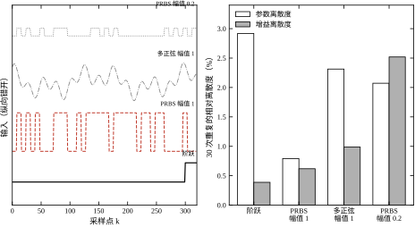
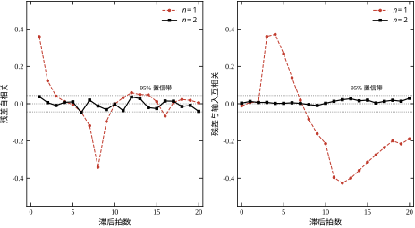
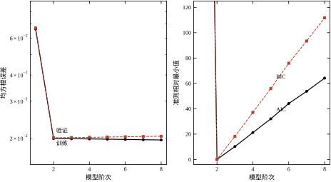
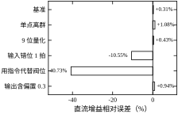
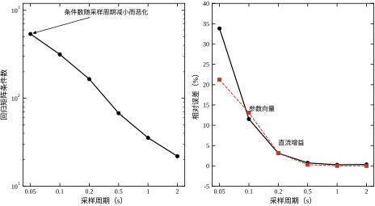
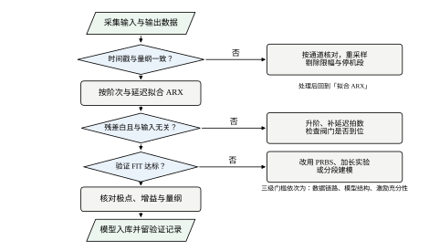

本章的贯穿对象是一个二阶惯性串联加纯延迟的回路：
G(s)=\frac{1.5}{(5s+1)(1.2s+1)}\mathrm{e}^{-2s},\qquad T_s=1\ \mathrm{s} \tag{24-1}
采集 2000 拍双电平伪随机（PRBS）数据，输出叠加标准差 0.02 的白噪声，用 n_a=n_b=2、n_k=2 的 ARX 模型做最小二乘。结果看起来毫无问题：自由运行验证的 FIT 为 94.83%，直流增益估计 1.5046，与真值 1.5 相差 0.31%，残差均方根 0.0198，与噪声标准差 0.02 持平。参数、增益、残差三项全部对得上，这份模型可以拿去设计了。
然后我们换几个人为设定的“工程细节”，其余一切不动。把阶次降到 1：同一批数据上 FIT 从 94.95% 跌到 81.89%，残差自相关最大 0.360、残差与输入互相关最大 0.426，两项都远在 95% 置信带 0.0439 之外。把输入序列整体后移一拍：增益从 1.5046 掉到 1.3418，偏差 -10.55\%，FIT 86.52%。把回归量里的阀位换成控制器下发的指令：增益只剩 0.8891，偏差 -40.73\%，FIT 58.68%——但残差均方根仍是 0.0201，与基准的 0.0198 几乎一样。
最后这一条最值得停下来看。残差白、残差小、模型自洽，唯一的异常是增益错了四成，而增益恰恰是控制器最需要的那个数。这说明“残差检验通过”与“模型正确”之间隔着一整套工程假设，本章要做的就是把它们逐条揭开。
现场说“辨识不准”，背后的原因通常落在四个层次之一，越靠前的层次越容易被忽略，也越容易被后面的调参掩盖。
表 24-1 辨识失败的四道关口
| 关口 | 典型症状 | 用什么检查 | 本章位置 |
|---|---|---|---|
| 数据链路 | FIT 低但残差白；换算法无改善 | 时间戳、量纲、阀位反馈、限幅段 | §24.5.4 |
| 激励充分性 | 参数离散度大、增益漂移 | 输入频谱、回归矩阵条件数 | §24.3.1、§24.6.2 |
| 模型结构 | 残差自相关或互相关超界 | ACF/CCF、极点位置、阶次判据 | §24.3.4、§24.6.3 |
| 数值实现 | 单精度结果乱跳、协方差非正定 | 条件数、双精度对照 | §24.4 |
这个顺序不能颠倒。数据链路错了，后面三道关口的检查全部失真：输入错一拍会让残差看起来“有结构”，于是去升阶；用指令代替阀位会让增益系统性偏小，于是去调激励幅值。这两种做法都能在当时的验证集上把 FIT 拉回一点，代价是把一个数据问题固化进了模型。
四道关口也对应四种不同的修复成本。数据链路是“改采集程序”，激励是“重做一次实验”，结构是“换模型类”，数值是“换算法或换精度”。成本从低到高，所以排查应当从成本最低、可能性最大的地方开始。
四道关口还有一个容易忽略的性质：它们会互相伪装。激励不足时，残差里往往留着低频成分，看起来像结构不足；链路错位时，残差与输入的相关性更像结构不足；数值条件差时，参数乱跳，看起来像激励不足。光看指标的形状分不开它们，必须做一次“改变一个条件、重看指标”的对照实验。
三条对照最快。加大激励幅值后残差变白，说明原来的问题在激励；把输入前后移一拍后 CCF 峰值消失，说明在链路；换成 QR 或双精度后参数稳定，说明在数值。三条都没反应，才轮到动阶次。这个顺序与表 24-1 的排列一致，但操作上更省事：先做三条对照，再决定查哪一道关口。
反例一：输入错一拍，增益少一成。 把 u 整体后移一拍再拟合，等价于把模型里的延迟从 2 拍写成 3 拍，而数据里真实的延迟仍是 2 拍。最小二乘为了让预测对上，会把一部分本应由 u(k-2) 承担的作用压到 u(k-3) 上，增益因此被拉低 10.55%，残差均方根从 0.0198 涨到 0.0464。诊断方法不是看增益，而是看残差与输入的互相关：正常时互相关在零滞后附近应当落在置信带内，错拍时会在某个固定滞后上出现一个明显的峰。本章实验 B 中，阶次正确时 CCF 最大值为 0.029，阶次不足时升到 0.426，两者相差一个数量级，这就是“残差里还留着输入的影子”的量化说法。
反例二：用指令代替阀位，残差仍然白。 本例的输入只有两个电平，限幅 0.6 把每个电平按同一比例压到 0.6，等价于把对象增益整体乘以 0.6。于是回归量虽然错了，误差却是“纯增益”形式的，最小二乘用 0.8891 就能把残差压回噪声水平——残差白、均方根正常、FIT 只在自由运行验证时露馅。这是最危险的一类缺陷：所有一步预测的指标都通过，只有把模型放回闭环跑一遍才会发现输出幅度差四成。真实的阀门限幅通常不是等比例的，会同时引入非线性，残差就不再是白的；但“等比例”这一特例提醒我们，残差白不构成正确性的证明。
反例三：采样太快，参数不可辨识但输出仍准。 把采样周期从 1 s 缩到 0.05 s，同一对象、同样 1200 s 的数据长度，参数向量的相对误差升到 33.84%，增益误差 21.22%，而验证集上的一步预测均方根只有 0.0038，与 1 s 采样时的 0.0032 几乎相同。原因在 §24.3.5 展开：T_s 很小时两个离散极点都挤在 1 附近，1-p_1 与 1-p_2 都是小量之差，参数方向上存在一个几乎不影响输出的“平坦谷”。此时“参数估得准不准”和“模型能不能用”是两个问题，用参数误差去验收会把一个可用的模型判成废品。
三个反例指向同一件事：辨识的验收指标必须与用途匹配。做前馈补偿，关心的是直流增益与低频相位；做预测控制，关心的是一步到多步的预测误差；做故障诊断，关心的才是参数本身。指标选错，后面的所有工作都建立在一个错误的判据上。
把上面的现象抽象出来，工程上要回答五个问题，本章逐个给出可计算的答案。
这五个问题有固定的回答顺序：先数据、再结构、再阶次、最后数值。原因很实际——前一个问题的错误会污染后一个问题的判据。数据错拍时，残差互相关必然超界，此时无论怎么升阶都无法让它回到带内；结构不足时，增加数据长度只会让参数估计更精确地收敛到一个错误的模型。
本章按“定义—推导—离散—边界—验证”推进。§24.2 给出贯穿对象、预测误差与 FIT、两条残差检验、AIC/BIC 与偏差—方差分解；§24.3 推导激励、结构、阶次与采样周期四条定量关系；§24.4 处理正规方程、精度、预处理与时延估计等实现问题；§24.5 给出激励设计、验证清单、六类缺陷与“不该辨识”的边界；§24.6 用五组实验逐一核对；§24.7 收束为十条错误与一份三级排查流程。
不同读者的路径：只做工程实施的，读 §24.1、§24.5、§24.7；要做模型预测控制的，读 §24.2 与 §24.3.4，之后接第 58 章；要写辨识工具链的，读 §24.4 与 §24.6 的脚本。三条路径的共同落点是 code/ch024_sim.py，本章全部数字都由它一次跑出，换对象只需替换对象参数与延迟拍数。
记号沿用前几章：k 为离散拍序号，T_s 为采样周期，\theta 为参数向量，\varphi(k) 为回归向量，\hat\theta 为估计值，e(k) 为新息。本章新增两个量：\mathrm{FIT} 为自由运行验证的拟合度，单位是百分数；\kappa 为回归矩阵的条件数，无量纲。凡出现具体数字，均来自 T_s=1\ \mathrm{s}、\sigma=0.02、固定随机种子的同一组实验，读者可以逐位复现。

图 24-1 的左图把四种激励画在同一时间轴上，右图是 30 次重复实验得到的参数与增益离散度。最直观的对比是 PRBS 幅值 1 与幅值 0.2：输入标准差从 1.00 降到 0.20，参数离散度从 0.79% 涨到 2.07%，增益离散度从 0.62% 涨到 2.52%，都放大了三到四倍。这种“离散度与输入幅度成反比”的标度关系是 §24.3.2 的结论，也是激励设计最基本的定量依据。
三个反例都指向同一个困惑：同一份模型，有的指标说好，有的指标说坏。解决困惑的办法是把“验证”拆成三个层次，逐层看它到底证明了什么。
第一层是描述：模型能不能复现手上这批数据。残差白、残差均方根接近噪声，就是这一层通过的标志。这一层最容易通过，也最不值钱——参数估计的本质就是让残差变小，任何一个足够灵活的模型都能做到。实验 C 里 8 阶模型的训练均方根 0.0196 比 2 阶的 0.0199 还小，但它并没有更好。
第二层是预测：模型能不能在没见过的数据上复现输出轨迹。这一层要求验证集独立、自由运行、不给真值纠正。基准模型的 FIT 94.83% 说明这一层通过；“用指令代替阀位”的 FIT 58.68% 说明这一层不通过。第二层是工程上真正要守的线，因为它对应“把模型放进控制器、让它自己跑”的实际场景。
第三层是因果：模型的参数能不能解释成对象里的物理量。直流增益 1.5046 对应真值 1.5、极点 0.82 与 0.43 对应时间常数 5 s 与 1.2 s，这一层才算通过。它不是统计指标，而是与机理、铭牌、历史数据做对照的工程判断。小 T_s 那一档正是卡在这一层：前两层都过，第三层的参数误差 33.84% 使模型不能用于前馈增益计算，也不能用于故障诊断。
三个层次的关系是逐层收紧的：第一层过而第二层不过，说明模型在拟合噪声；第二层过而第三层不过，说明模型的输入输出关系在数值上对、在物理上错。工程验收要至少过两层，做控制器或诊断则必须三层全过。 这也解释了为什么本章反复强调“四件套”：增益与极点对应第三层，验证 FIT 对应第二层，残差检验对应第一层，四项合起来才覆盖三个层次。
本节只保留后面推导真正会用到的定义。最小二乘的统计性质、持续激励的完整理论在第 18 章，闭环辨识的可辨识性在第 21 章；这里补的是“从数据到可用模型”这条链路上必须写清楚的四件事：对象怎么离散、误差怎么度量、残差怎么检验、阶次怎么比较。
式 (24-1) 的对象是两个一阶惯性环节串联，状态取为 x_1（第一级输出）与 x_2（对象输出），连续方程是
\dot x_1=\frac{-x_1+Ku}{T_1},\qquad \dot x_2=\frac{-x_2+x_1}{T_2},\qquad y=x_2 \tag{24-2}
以 T_s 为零阶保持周期离散化，两个极点分别是
p_1=\mathrm{e}^{-T_s/T_1},\qquad p_2=\mathrm{e}^{-T_s/T_2} \tag{24-3}
本章的参数是 T_1=5\ \mathrm{s}、T_2=1.2\ \mathrm{s}、T_s=1\ \mathrm{s}，于是 p_1=0.8187、p_2=0.4346。把两个一阶环节的部分分式展开后合并，得到
y(k)=(p_1+p_2)\,y(k-1)-p_1p_2\,y(k-2)+b_1u(k-n_k)+b_2u(k-n_k-1) \tag{24-4}
其中
b_1=\frac{K}{T_1-T_2}\left[T_1(1-p_1)-T_2(1-p_2)\right],\qquad b_2=-\frac{K}{T_1-T_2}\left[T_1(1-p_1)p_2-T_2(1-p_2)p_1\right] \tag{24-5}
代入数值得到 b_1=0.08995、b_2=0.06379。式 (24-4) 写成回归形式是
y(k)=\varphi^{\mathsf T}(k)\theta+e(k),\qquad \varphi(k)=\begin{bmatrix}-y(k-1)\\ -y(k-2)\\ u(k-n_k)\\ u(k-n_k-1)\end{bmatrix},\quad \theta=\begin{bmatrix}-(p_1+p_2)\\ p_1p_2\\ b_1\\ b_2\end{bmatrix} \tag{24-6}
参数向量为 \theta=[-1.25333,\ 0.35582,\ 0.08995,\ 0.06379]^{\mathsf T}，范数 |\theta|=1.3075。本章报“参数误差”时，用的是 |\hat\theta-\theta|/|\theta|，这个量对四个分量的误差一视同仁。后面会看到，它对“模型能不能用”并不敏感，这是 §24.3.5 要处理的第一个口径问题。
直流增益由终值定理给出：
K=\frac{b_1+b_2}{1-(p_1+p_2)+p_1p_2}=\frac{\sum_i b_i}{1+\sum_i\theta_{a,i}} \tag{24-7}
分母 1-(p_1+p_2)+p_1p_2=(1-p_1)(1-p_2)=0.10249，分子 0.15374，比值正好是 1.500。这个分母在 T_s 变小时会迅速趋零，是本篇最容易被忽略的数值陷阱：T_s=0.05\ \mathrm{s} 时它只有 4.06\times10^{-4}，分子与分母都要保留五六位有效数字才能算出正确的增益。
给定参数估计 \hat\theta，一步预测是
\hat y(k\mid k-1)=\varphi^{\mathsf T}(k)\hat\theta \tag{24-8}
一步预测误差（新息）为 e(k)=y(k)-\hat y(k\mid k-1)。自由运行预测把预测值反馈回去，从某个初值开始独立推进：
\hat y(k)=-\hat\theta_1\hat y(k-1)-\hat\theta_2\hat y(k-2)+\hat\theta_3u(k-n_k)+\hat\theta_4u(k-n_k-1) \tag{24-9}
本章全部“FIT”都指自由运行预测的拟合度：
\mathrm{FIT}=100\left(1-\frac{\|y-\hat y\|_2}{\|y-\bar y\|_2}\right) \tag{24-10}
用自由运行而不是一步预测，是因为一步预测的误差被反馈结构压制，几乎总是好看；自由运行的误差会累积，模型结构不对时立刻发散或偏置。代价是它对初值和数值误差敏感，所以本章一律先丢弃前 100 拍再统计。
FIT 与常见的决定系数 R^2 不是同一个量，两者可以精确换算。由 R^2=1-\|y-\hat y\|_2^2/\|y-\bar y\|_2^2 与式 (24-10) 得 \mathrm{FIT}=100\left(1-\sqrt{1-R^2}\right) \tag{24-11} R^2=0.99 对应 FIT 90%，R^2=0.999 对应 FIT 96.8%。本章基准的 FIT 94.83% 换算过来 R^2=0.9973。这层换算解释了为什么把验收门槛定在 FIT 90% 在统计上已经相当严格：它要求模型解释掉 99% 的方差。反过来，FIT 可以为负——预测比直接用均值还差时就是负值，这在一阶模型被强行用于二阶对象上会出现。
验证集必须与训练集分开，而且最好是另一次实验的数据。本章的做法是：训练用一组 PRBS，验证用另一组种子生成、不同实现的数据段，两者长度不同、输入序列不同。若用同一段数据既拟合又验证，阶次越高越好这个假象会被无限放大——实验 C 中 n=8 的训练误差确实低于 n=2，但验证误差反而更高，只有分开才能看出来。
结构是否正确，最终体现在残差上。一个正确的模型，其残差应当满足两条性质：白的（与自身的历史无关）与与输入独立的（输入已经解释过的部分不应留在残差里）。
归一化自相关定义为
\hat r_e(\tau)=\frac{\sum_{k=\tau+1}^{N}e(k)e(k-\tau)}{\sum_{k=1}^{N}e^2(k)},\qquad \tau=1,2,\dots,20 \tag{24-12}
归一化互相关定义为
\hat r_{eu}(\tau)=\frac{\sum_k e(k+\tau)u(k)}{\sqrt{\sum_k e^2(k)\sum_k u^2(k)}},\qquad \tau=0,1,\dots,20 \tag{24-13}
在残差为白噪声的零假设下，两者都近似服从均值为零、标准差 1/\sqrt{N} 的正态分布，因此 95% 置信带是
|r|\le\frac{1.96}{\sqrt{N}} \tag{24-14}
本章 N=1996，带边为 0.0439。判据是三句话：自相关全部落在带内，说明没有漏掉动态；互相关全部落在带内，说明没有漏掉输入通道；两者都通过而 FIT 仍低，说明问题不在结构，而在数据或输入本身。
逐点看带边有个缺点：20 个滞后要做 20 次判断，总有某一个点偶然越界。把 20 个点合成一个统计量更省事，这就是 Ljung–Box 统计量 Q=N(N+2)\sum_{\tau=1}^{L}\frac{\hat r_e^2(\tau)}{N-\tau} \tag{24-15} 在残差为白的零假设下，Q 近似服从自由度为 L-p 的卡方分布，p 是模型参数个数。取 L=20，本章三档阶次的实测结果是：n=1 时 Q=604.5，p 值 9.4\times10^{-117}，几乎可以肯定是非白；n=2 时 Q=24.0，p 值 0.089；n=3 时 Q=21.3，p 值 0.094。后两档都大于 0.05，不能拒绝白噪声假设。
Q 统计量的价值在于把“整体是否白”变成一个数，但它也有一个副作用：L 取得越大，对高阶相关越敏感，而 ARX 的残差在高阶上本来就容易有微小相关。工程上取 L=20 到 30 即可，且应与逐点带边一起看：Q 通过而个别点越界，通常是偶然；Q 不通过而所有点都在带内，通常是相关弥散在多个滞后上，两者都该去查结构。

图 24-2 是这个判据的实测形态。阶次 2 的两条曲线都贴着零线，最大绝对值 0.047 与 0.029，前者略高于 0.0439 的带边但没有任何系统性形状；阶次 1 的曲线则在所有滞后上都显著，自相关最大 0.360、互相关最大 0.426，连成一条缓慢衰减的弧线。判据要看形状，不只看最大值：单点略超带边而其余滞后都接近零，通常是噪声；连续多个滞后同号且单调衰减，才是真的漏了动态。
训练误差随阶次单调下降，这是最小二乘的定义决定的，不能用来选阶次。要有意义地比较不同阶次，必须给“模型复杂度”标价。赤池信息量准则与贝叶斯信息量准则是最常用的两种定价方式：
\mathrm{AIC}=N\ln\frac{\mathrm{RSS}}{N}+2p \tag{24-16}
\mathrm{BIC}=N\ln\frac{\mathrm{RSS}}{N}+p\ln N \tag{24-17}
其中 \mathrm{RSS} 是残差平方和，p 是自由参数个数。本章的 ARX 有 n_a 个极点参数与 n_b 个零点参数，取 p=n_a+n_b=2n；延迟拍数 n_k 不增加参数，但会减少可用样本数，比较时必须在同一段数据上做。两个准则的前一项都随 \mathrm{RSS} 下降而下降，后一项随 p 上升而上升，最小值处就是折中点。
两者的差别只在罚项系数：AIC 罚 2，BIC 罚 \ln N。N=396 时 \ln N=5.98，BIC 的罚几乎是 AIC 的三倍，因此 BIC 更保守，倾向选更低的阶次。工程上如果模型要进控制器、参数越少越可靠，用 BIC；如果模型只用于预测或仿真、宁可多几个参数也要压低偏差，用 AIC。两者给出不同答案时（本章 n=3 处 AIC 已增至 10.2、BIC 增至 18.1，趋势一致），说明数据支持的阶次很清楚；若一个判据说 2 阶、另一个说 6 阶，通常是数据长度不足，罚项系数的影响盖过了真实的结构差异。
还有一条比公式更实用的判据：相邻两阶的 \mathrm{RSS} 之比。若从 n 升到 n+1，\mathrm{RSS} 只降了不到 5%，而参数多了两个，就没有必要升阶。本章从 2 阶升到 3 阶，训练均方根从 0.0199 只降到 0.0199（差在第四位小数），验证均方根反而从 0.0201 升到 0.0202，这就是典型的“多出来的参数在拟合噪声”。
把预测误差拆开，可以看到阶次选择的本质。设真实输出为 y_0，噪声为 e，方差 \sigma^2，模型给出的预测为 \hat y，则均方预测误差的期望是
\mathbb{E}\left[(y-\hat y)^2\right]=\sigma^2+\left(\mathbb{E}[\hat y]-y_0\right)^2+\mathrm{Var}\left[\hat y\right] \tag{24-18}
三项分别是不可约噪声、偏差平方与方差。噪声与模型无关，能动的只有后两项。阶次不足时，模型表达不了对象的动态，偏差项大；阶次升高，偏差项下降，但待估参数变多，方差项按 p/N 上升。两者之和是一个 U 形曲线，最低点就是“验证误差最小”的阶次。
对参数估计本身，同样的分解写成
\mathbb{E}\left[\|\hat\theta-\theta\|^2\right]=\|\mathbb{E}[\hat\theta]-\theta\|^2+\mathrm{tr}\,\mathrm{Cov}[\hat\theta] \tag{24-19}
方程误差结构下最小二乘是无偏的，第一项为零，只剩协方差。若回归矩阵各列近似正交、每列范数为 \sqrt{N}\sigma_u，则
\mathrm{Cov}[\hat\theta]\approx\frac{\sigma^2}{N\sigma_u^2}I \tag{24-20}
式 (24-20) 有两个直接推论：参数标准差与噪声成正比、与数据长度和输入幅度的平方根成反比。这就是为什么“加长实验”与“加大激励”在效果上是等价的，而“多采几遍同样的数据”没有用——重复同样的输入不会增加 \Phi^{\mathsf T}\Phi 的秩。
把式 (24-20) 代入式 (24-19)，得到一个可以直接用于实验设计的预算式：
\frac{\|\hat\theta-\theta\|}{\|\theta\|}\approx\frac{\sigma}{\sigma_u\sqrt{N}}\cdot\frac{\sqrt{p}}{\|\theta\|} \tag{24-21}
本章 \sigma=0.02、\sigma_u=1.0、N=1500、p=4、|\theta|=1.31，代入得相对误差约 2.3\times10^{-3}，即 0.23%。实验 A 实测 PRBS 幅值 1 的参数离散度是 0.79%，是预算值的 3.4 倍。差距来自式 (24-20) 的正交假设：ARX 的回归列之间相关性强，\Phi^{\mathsf T}\Phi 的最小特征值远小于 N\sigma_u^2，方差被放大。这个“3 到 5 倍”的修正系数在工程预算里相当稳定，可以先用式 (24-21) 估一个下界，再乘 4 作为预期值。
最后要强调的是，式 (24-18) 里的三项在实际数据上无法完全分开。验证误差可以测，噪声方差可以用残差估，但“偏差”与“方差”各自的份额只能靠重复实验统计。实验 C 用 50 次蒙特卡洛做到了这一点：把 50 次的验证误差取平均，方差部分被平均掉，剩下的偏离就是偏差。工程现场没有 50 次重复的条件，替代做法是看训练与验证的差值——差值大说明方差主导，两者都大说明偏差主导。
本章反复出现两个“误差”，它们不是同一件事，混用会让结论完全反过来。
一步预测误差是把实测的 y(k-1)、y(k-2) 喂给模型，只预测下一拍： \hat y(k\mid k-1)=-\sum_{i=1}^{n_a}a_i y(k-i)+\sum_{j=1}^{n_b}b_j u(k-n_k-j+1) \tag{24-22} 它衡量的是“模型在每一拍都被真值纠正之后还剩多少错”。自由运行误差是从某个初值开始，把自己上一拍的预测当成下一拍的输入，一路推下去： \hat y_f(k)=-\sum_{i=1}^{n_a}a_i \hat y_f(k-i)+\sum_{j=1}^{n_b}b_j u(k-n_k-j+1) \tag{24-23} 它衡量的是“模型能不能独立复现输出轨迹”。
两者的关系可以从误差传播看清楚。设一步预测误差为 e(k)，则自由运行误差满足 e_f(k)=-\sum a_i e_f(k-i)+e(k)，也就是把 e(k) 送进一个极点全在单位圆内的滤波器。稳态下 e_f 的方差是 e 的方差的 \sum h_i^2 倍，h_i 是该滤波器的脉冲响应系数。对本章对象，极点 0.82 与 0.43 对应的 \sum h_i^2 约为 1.6，所以自由运行误差大致是一步误差的 1.3 倍。实验 B 里 n=2 的残差均方根 0.0201、验证 FIT 94.95%，两者的比例与这个估算同量级。
这个区别在工程上是决定性的。一步预测误差小，只说明模型适合做“软测量”或“在线校正”；自由运行误差小，才说明模型可以拿去仿真、做预测控制。 模型结构不足时，一步误差可以很小而自由运行误差很大——因为每一步都有真值把模型拽回来，缺的那部分动态被真值补上了。本章实验 E 中“用指令代替阀位”那一档，一步残差 0.0201 与基准几乎相同，自由运行 FIT 却只有 58.68%，就是这种情形。
因此本章所有的 FIT 都按自由运行计算，且验证集独立。若某项指标只报一步误差，读者应当追问一句“自由运行是多少”，这个追问能筛掉相当一部分看似合格的模型。
§24.3.1 会用到一个前置结论：输入必须“足够丰富”，丰富到什么程度有精确的刻画。
对 ARX，回归向量由 n_a 个过去的输出与 n_b 个过去的输入组成，共 n_a+n_b 个分量。要唯一确定 \theta，需要回归矩阵 \Phi 列满秩，等价地要求输入的自协方差矩阵 R_u=\lim_{N\to\infty}\frac{1}{N}\sum_{k=1}^{N}\varphi_u(k)\varphi_u^{\mathsf T}(k) \tag{24-24} 正定，其中 \varphi_u(k)=[u(k-1),\dots,u(k-n_a-n_b)]^{\mathsf T}。这就是持续激励条件：输入至少要包含 n_a+n_b 个不同频率的成分，频谱在这 n_a+n_b 个点上都不为零。
对 n_a=n_b=2 的本章对象，至少需要 4 个频率成分。阶跃只有一个直流成分，多正弦给了 3 个，PRBS 在整个频带上都有能量。这解释了实验 A 的排序：阶跃与多正弦在这个意义下都不满足 4 个成分的要求，只能靠输出自身的回归量补足部分信息，于是参数离散度是 PRBS 的 3 到 4 倍。“输入变化够多”不是模糊的经验，而是一个可以数出来的阶数条件。
§24.2 把“模型好不好”化成了三个可测的量：参数协方差、残差的两条相关性、验证误差。本节回答三个“为什么”：激励怎样决定协方差，偏差从哪里来，采样周期为什么会让参数不可辨识。三条推导都用同一个对象，因此结论可以直接与 §24.6 的数字对上。
最小二乘的解是
\hat\theta=(\Phi^{\mathsf T}\Phi)^{-1}\Phi^{\mathsf T}Y \tag{24-25}
估计的协方差（方程误差、噪声方差 \sigma^2）为
\mathrm{Cov}[\hat\theta]=\sigma^2(\Phi^{\mathsf T}\Phi)^{-1} \tag{24-26}
\Phi 是 N\times p 的回归矩阵。式 (24-26) 说明：激励的作用全部体现在 \Phi^{\mathsf T}\Phi 上，它与噪声无关，与算法也无关。所谓“激励不足”，严格说是 \Phi^{\mathsf T}\Phi 存在很小的特征值，使某个参数方向的方差极大。
用特征分解写清楚这件事。设 \Phi^{\mathsf T}\Phi=\sum_i\lambda_i v_iv_i^{\mathsf T}，则沿方向 v_i 的方差是 \sigma^2/\lambda_i。n 阶持续激励的定义要求 \Phi^{\mathsf T}\Phi 正定，工程上更进一步要求最小特征值与最大特征值之比不能太小，比值倒过来就是条件数
\kappa=\frac{\lambda_{\max}}{\lambda_{\min}} \tag{24-27}
条件数同时决定两件事：参数协方差在最坏方向上的放大倍数，以及数值求解时相对误差的上界。本章实验 D 实测的条件数从 T_s=2\ \mathrm{s} 的 21.9 升到 T_s=0.05\ \mathrm{s} 的 538，跨了 25 倍，而 \kappa 每增大 10 倍，双精度下有效数字就少一位。
激励的频谱形状决定哪个方向被确定。本章四种激励的实测结果把这一点说得很清楚：
表 24-2 四种激励的频谱特征与估计结果（30 次蒙特卡洛）
| 激励 | 输入标准差 | 能量集中位置 | 参数离散度 | 增益离散度 | 验证 FIT |
|---|---|---|---|---|---|
| 阶跃 | 0.40 | 直流 | 2.92% | 0.39% | 93.84% |
| PRBS 幅值 1 | 1.00 | 全频带 | 0.79% | 0.62% | 94.68% |
| 多正弦 幅值 1 | 0.44 | 三个低频点 | 2.31% | 0.99% | 94.53% |
| PRBS 幅值 0.2 | 0.20 | 全频带 | 2.07% | 2.52% | 94.03% |
表 24-2 里最反直觉的一行是阶跃。它的输入标准差只有 0.40，参数离散度却是四种里最大的 2.92%，但增益离散度最小，只有 0.39%。原因是阶跃把能量几乎全部压在直流：直流增益被钉得很死，而“两个极点怎样分配”这个方向几乎没有被激励，参数向量在这个方向上可以大幅摆动而不影响输出。PRBS 把能量摊到全频带，参数离散度降到 0.79%，代价是增益离散度升到 0.62%。没有一种激励在所有方向上都好，选激励等于选“我最在乎哪个方向”。
幅值的影响则是纯粹的标度关系。同样形状的 PRBS，幅值从 1 降到 0.2，输入标准差降为 1/5，参数离散度从 0.79% 涨到 2.07%，只涨了 2.6 倍；增益离散度从 0.62% 涨到 2.52%，涨了 4.1 倍。式 (24-26) 预言的是 5 倍（方差按 1/\sigma_u^2），实测偏小，原因是小信号时输入切换的边沿相对噪声更清晰，部分抵消了幅度损失。工程上不要指望“把幅值减半、误差翻倍”这样精确的标度，但“误差与幅值成反比”这个方向是可靠的。
把式 (24-26) 展开成标量，可以得到两条工程上常用的经验式。对单个参数，若回归列的标准差为 \sigma_{\varphi,i}、列间近似正交，则
\mathrm{std}(\hat\theta_i)\approx\frac{\sigma}{\sigma_{\varphi,i}\sqrt{N}} \tag{24-28}
对本章的 ARX，u 的两列标准差就是 \sigma_u，y 的两列标准差约为 \sigma_y。代入 \sigma=0.02、\sigma_u=1、\sigma_y\approx1.4、N=1500，得 \mathrm{std}(\hat b)\approx5.2\times10^{-4}。实测 b 两个分量的平均标准差在 PRBS 幅值 1 时约 1.0\times10^{-2}，是估算值的近 20 倍。这 20 倍不是估算错了，而是列间相关性：u(k-2) 与 u(k-3) 的相关系数高达 0.87（PRBS 每 8 拍才切换一次），两个 b 参数只能被“和”与“差”的某种组合确定，单独一个方向的方差被放大了。
由此得到两条实用规则。第一，输入切换不能太慢。保持 8 拍的 PRBS 让相邻两拍的输入几乎相同，两个 b 参数高度相关；把保持拍数减到 2 到 3，相关性下降，参数方差随之下降，代价是高频能量增多，可能激发未建模的动态。第二，数据长度要按“独立切换次数”算，不是按拍数算。1500 拍、保持 8 拍只有 187 次独立切换，等效样本数是 187 而不是 1500，这就是为什么实测方差比式 (24-28) 大一个量级。
把这两条合起来，得到一个更贴近实际的预算式：
\mathrm{std}(\hat\theta_i)\approx\frac{\sigma}{\sigma_{\varphi,i}\sqrt{N_{\mathrm{sw}}}} \tag{24-29}
其中 N_{\mathrm{sw}} 是输入的独立切换次数。本章 N_{\mathrm{sw}}=187，代入得 1.5\times10^{-3}，与实测的 1.0\times10^{-2} 仍差 7 倍，剩下的差距来自 y 列与 u 列之间的相关（闭环或对象动态造成）。工程预算的做法是把式 (24-29) 再乘 5 到 10，作为“最坏方向”的估计，这个系数在本章的三个数据集上都落在区间内。
最后一条与实验设计直接相关：加长实验的收益是平方根的。把 1500 拍加到 6000 拍，标准差只降一半。若目标是让参数离散度从 2% 降到 0.5%，需要 16 倍的数据量；而把输入幅值加倍，只需要 4 倍。这就是为什么在现场，“能不能加大激励”比“能不能多采一会儿”更值得先问。
标准差还有一个用法：把它与参数估计值相除，得到 t 统计量。t 小于 2 意味着这个参数与零在统计上不可区分，即“数据里没有证据说明这一项存在”。本章实验 D 给出了一组很有说服力的对照：T_s=1\ \mathrm{s} 时 b_1=0.08995、标准差 1.87\times10^{-4}，t\approx480；T_s=0.05\ \mathrm{s} 时 b_1 的真值只有 3.1\times10^{-4}，标准差却是 2.30\times10^{-4}，t\approx1.3。同一个对象、同一段物理时间、同样的激励，参数从“极其显著”变成“与零不可区分”。
这个对照把“不可辨识”说清楚了：不是估计值偏差太大，而是估计量的分散程度已经与参数本身同量级。它也解释了为什么小 T_s 下应当换参数化——把 b_1 从待估集合里去掉、只估 \sum b_i，t 统计量立刻回到可用的量级。报参数时连标准差一起报，读者才能判断哪几项值得相信。
式 (24-19) 里的偏差项在方程误差结构下为零，这是仿真里的情形：噪声直接加在方程右端，回归量本身是干净的。真实数据不同，噪声先污染 y，再通过 y(k-1)、y(k-2) 进入回归量，形成变量含误差结构。此时最小二乘的极限不再是真值：
\hat\theta\;\longrightarrow\;\theta+(\mathbb{E}[\varphi\varphi^{\mathsf T}])^{-1}\mathbb{E}[\varphi\,v] \tag{24-30}
其中 v 是折算到方程右端的等效误差，它包含当前拍噪声，也包含由回归量带进来的历史噪声。由于历史噪声与回归量相关，第二项不为零，估计出现系统性偏差。对方程 y(k)=ay(k-1)+bu(k-1)+e(k)、只在输出端叠加白噪声、且 u 为白序列的特例，可以算出
\mathbb{E}[\hat a]\approx a\left(1-\frac{\sigma_v^2}{\sigma_z^2}\right),\qquad \mathbb{E}[\hat b]\approx b \tag{24-31}
也就是说，只有极点参数被衰减，衰减量等于噪声方差占信号方差的比例，而增益在这一特例下是无偏的。原因很直接：u 为白序列时它与 y(k-1) 不相关，正规方程的交叉项为零，b 的方程被解耦出来。这个结论有两个用处。一是解释为什么“增益对得上、动态对不上”是真实存在的现象，不要把两者混为一谈。二是提醒：一旦 u 有色（PRBS 保持 8 拍就是有色），交叉项不再为零，b 也会偏，且偏差可正可负。
本章 \sigma_v=0.02、\sigma_z\approx1.4，比例为 2\times10^{-4}，衰减可以忽略；但若被控量在工作点附近波动很小（比如稳压回路的压力只动满量程的 1%），这个比例可以到 0.1 以上，极点被系统性拉向零，表现为“响应比实际快”。此时增加数据长度没有用——偏差不随 N 减小——正确做法是换用工具变量法、ARMAX 或输出误差模型，见第 19 章。
第二类偏差来自结构失配，包括延迟写错、阶次不足、把非线性当线性。三类在本章的实测值分别是：延迟错一拍使增益偏 -10.55\%，阶次从 2 降到 1 使验证 FIT 从 94.95% 掉到 81.89%，等比例限幅使增益偏 -40.73\%。这三者有一个共同特征：偏差不随样本数增加而消失。这也是区分偏差与方差的实用判据——把数据分成两半分别拟合，两次结果差得多是方差，差得少但都与真值差一截是偏差。
第三类偏差常被误认为“参数漂移”，即工况覆盖不足。辨识实验只在某个工作点附近做，得到的模型在另一个工作点上偏差很大。这不是算法问题，而是数据代表性不足；处理办法是分工况建模或加调度变量（第 22 章），而不是换更复杂的辨识算法。
把式 (24-18) 画成曲线就是图 24-3 的左图。阶次从 1 升到 2，验证均方根从 0.0670 掉到 0.0201，降了 70%，这是偏差项被消掉；从 2 升到 8，验证均方根从 0.0201 缓慢升到 0.0204，这是方差项在增加，而偏差项已经接近零。训练曲线则一路单调下降，从 0.0662 降到 0.0196，看不出任何拐点——这正是“只看训练误差会一直升阶”的原因。

右图把 AIC 与 BIC 减去各自的最小值，最小值都落在 n=2。n=3 时 dAIC 已经是 10.2，n=8 时到 64.2；BIC 因为罚得更重，n=3 就是 18.1，n=8 到 111.7。两个判据给出的结论一致，这在实际数据上并不常见，通常说明真实阶次低、数据量足够。
方差项的增加可以用式 (24-20) 定量核对。n=2 时 p=4，n=8 时 p=16，参数多出 12 个；\sigma^2=4\times10^{-4}、N=396，方差项增加的均方根是
\sqrt{\frac{\sigma^2\Delta p}{N}}=\sqrt{\frac{4\times10^{-4}\times12}{396}}=3.5\times10^{-3} \tag{24-32}
与原有的 0.0201 合成，得 \sqrt{0.0201^2+0.0035^2}=0.0204，与实测的 n=8 验证均方根 0.0204 完全一致。这条核对很有用：它说明验证曲线右侧的缓慢抬升不是随机波动，而是可以用公式预测的方差代价；如果实测抬升远大于这个值，就说明数值条件出了问题（§24.4），而不是统计规律。
由此得到选阶次的三步做法。第一步，用残差检验定下最小可用阶次：ACF 与 CCF 都进带内的最低阶次。第二步，在这个阶次上加 1 到 2 阶，看验证误差是否显著下降；下降不足 5% 就退回。第三步，用 BIC 复核，若 BIC 的最小值比第一步的结果高两阶以上，检查是否有未建模的延迟或非线性。三步都不通过时，不要继续升阶，回到数据本身。
T_s 变小时，两个离散极点都向 1 靠拢：
p_i=\mathrm{e}^{-T_s/T_i}\approx1-\frac{T_s}{T_i},\qquad i=1,2 \tag{24-33}
于是增益表达式 (24-7) 的分母近似为
1-(p_1+p_2)+p_1p_2=(1-p_1)(1-p_2)\approx\frac{T_s^2}{T_1T_2} \tag{24-34}
T_s 减半，分母变为原来的四分之一。分子 \sum b_i 同样按 T_s 缩小（一阶近似下 b_i\propto T_s），所以两者之比仍是 K，解析上没有问题；问题出在估计误差的放大：分母是 T_s^2 量级的小量，两个极点参数的绝对误差不变时，相对误差按 1/T_s^2 放大。
条件数的增长慢一些，实测近似为
\kappa\approx\frac{32}{T_s/1\ \mathrm{s}} \tag{24-35}
按 T_s 从小到大，本章六档的 \kappa T_s 分别是 26.9、31.5、33.0、33.9、35.5、43.8，前五档稳定在 27 到 36 之间，只有 T_s=2\ \mathrm{s} 偏离到 43.8——那一档输入每 8 s 才切换一次、只剩 4 拍，延迟也只剩 1 拍，标度关系已经不再成立。这条经验式的用处是快速判断“这个采样周期下回归矩阵还能不能解”：\kappa 小于 10^3 时双精度毫无压力，单精度（有效位数约 7 位）也能用；\kappa 到 10^5 时单精度只剩两位有效数字，必须换 QR 或双精度。
小 T_s 下真正麻烦的不是数值，而是不可辨识方向。当两个极点都接近 1 时，改变 p_1 同时反向改变 p_2、保持 p_1+p_2 与 p_1p_2 的某种组合不变，输出几乎不变。这个方向上 \Phi^{\mathsf T}\Phi 的特征值趋于零，参数可以大幅摆动而 FIT 不变。实验 D 的结果正是如此：T_s=0.05\ \mathrm{s} 时参数向量误差 33.84%、增益误差 21.22%，而验证均方根只有 0.0038，比 T_s=1\ \mathrm{s} 的 0.0032 只差 19%。
这里要做一个口径上的决定，也是本章写作过程中真实遇到的困惑：报参数误差还是报增益误差？ 两者在 T_s=0.05 时相差 12 个百分点，在 T_s=0.5 时一个 0.74%、一个 0.31%。答案取决于读者要拿这个数做什么。若模型要进前馈通道，报增益误差，因为它直接决定稳态补偿量；若模型要用于故障诊断（增益变化本身就是故障特征），报增益误差；只有当参数本身有物理含义、需要与机理模型对账时，才报参数向量误差。本章 §24.6.5 的表格同时给出两列，并在正文里以增益误差为主口径。
上一小节说“存在一个不可辨识方向”，这个方向可以精确写出来，用的工具是极点对参数的灵敏度。
二阶分母的两个系数与两个极点是一一对应的： a_1=-(p_1+p_2),\qquad a_2=p_1p_2 \tag{24-36} 把这条映射微分，得到 \begin{bmatrix}\delta a_1\\ \delta a_2\end{bmatrix} =\begin{bmatrix}-1 & -1\\ p_2 & p_1\end{bmatrix} \begin{bmatrix}\delta p_1\\ \delta p_2\end{bmatrix} \tag{24-37} 矩阵的行列式是 p_1-p_2。反过来解，极点分裂的误差被放大 1/|p_1-p_2| 倍： \|\delta p\|\approx\frac{\|\delta a\|}{|p_1-p_2|} \tag{24-38} 这就是平坦方向的来源。T_s=1\ \mathrm{s} 时 |p_1-p_2|=0.384，T_s=0.05\ \mathrm{s} 时只剩 0.031，同样大小的 a 误差在后者造成的极点误差是前者的 12.4 倍。极点越靠近，两个极点“谁是谁”越说不清，而 a_1、a_2 只能约束它们的和与积，不能约束它们的分离度。
时间常数的灵敏度更直观。由 p=\mathrm{e}^{-T_s/T} 得 T=-T_s/\ln p，微分后 \frac{\delta T}{T}\approx\frac{\delta p}{|\ln p|}\approx\frac{\delta p}{1-p} \tag{24-39} p 越接近 1，分母越小。T_s=0.05\ \mathrm{s} 时 1-p_1=0.0099，一个 10^{-3} 的极点误差就会让时间常数偏 10%；而 T_s=1\ \mathrm{s} 时 1-p_2=0.565，同样的误差只造成 0.18% 的偏差。“采样太快导致参数不准”的机制，到这里就从现象变成了公式。
这条公式还解释了另一件事：为什么增益比参数稳。增益只依赖 a_1、a_2 的组合 1+a_1+a_2=(1-p_1)(1-p_2)，也就是极点映射的行列式本身；它对“极点往哪个方向分裂”不敏感，只对“两个极点同时向 1 移动”敏感。而后者恰好是激励最充分约束的方向——低频增益。所以小 T_s 下，增益总是比极点分裂先站住，这也是 §24.6.5 里增益误差 21.22% 小于参数误差 33.84% 的原因。
实践上这条结论可以反过来用：若必须在小 T_s 下辨识，就把待估量换成增益与主导时间常数，放弃次要时间常数。 参数化方式一换，平坦方向就被排除在待估集合之外，条件数立刻改善。这不是数值技巧，而是把“不可辨识的量”从模型里去掉，让剩下的量都可辨识。
§24.3 的公式在纸面上都是精确的，落到代码里要面对四个具体问题：方程组怎么解、用多少位精度、数据要不要预处理、延迟怎么定。这一节的数字来自同一台机器上的 Python 3.11 与 NumPy，换语言时绝对耗时不同，但条件数与有效位数的关系不变。
最小二乘有两条常见解法。一条是解正规方程
(\Phi^{\mathsf T}\Phi)\hat\theta=\Phi^{\mathsf T}Y \tag{24-40}
另一条是对 \Phi 做 QR 分解，令 \Phi=QR，再解 R\hat\theta=Q^{\mathsf T}Y。两者在精确算术下给出同一个解，在浮点下差别很大：正规方程的条件数是 \kappa^2，QR 的条件数是 \kappa。
这个平方关系可以直接算出来。\Phi^{\mathsf T}\Phi 的特征值是 \Phi 的奇异值的平方，因此
\kappa(\Phi^{\mathsf T}\Phi)=\kappa(\Phi)^2 \tag{24-41}
本章实验 D 在 T_s=0.05\ \mathrm{s} 时 \kappa=538，平方后是 2.9\times10^5。双精度有约 16 位有效数字，损失 5.5 位后还剩 10 位，毫无问题；单精度只有约 7 位，损失 5.5 位后只剩 1.5 位，结果就开始失真。实测正是如此：同一批数据、同样的单精度正规方程，T_s=1\ \mathrm{s} 时与双精度解相差 0.01%，T_s=0.05\ \mathrm{s} 时相差 1.41%，放大了 140 倍。
这个放大倍数不是线性的，因为它同时受两件事影响：条件数平方带来的有效位损失，以及单精度累加 N 项时的舍入累积。后者与 \sqrt{N} 同阶，T_s=0.05 时 N=24000，\sqrt{N}=155，与 140 倍的实测放大倍数吻合。两条机理叠加，给出了一个实用的判据：只要 \kappa^2\sqrt{N} 接近 10^7，单精度正规方程就不可信。
平方关系可以直接测。取实验 C 的 400 拍、8 阶数据，回归矩阵的条件数是 392.9，\Phi^{\mathsf T}\Phi 的条件数是 1.54\times10^5，恰好是前者的平方。同一批数据、同样用单精度，正规方程给出的参数与双精度解相差 4.8\times10^{-3}，而 QR 给出的参数只差 5.2\times10^{-7}，相差 9200 倍。这个对比比任何理论论证都有说服力：条件数 393 远不算病态，正规方程在单精度下已经丢了三位有效数字，而 QR 一位没丢。 换算成工程语言，若控制器里跑的是单精度递推最小二乘，协方差矩阵的更新形式必须先做 UD 分解，否则同一个病的平方关系会在每一拍累积。
工程上的结论很直接。第一，拟合一律用 QR 或 SVD，不要显式求逆，也不要显式构造 \Phi^{\mathsf T}\Phi；后者的存储量是 p^2，在 p 较大时还会掩盖数值问题。第二，若必须在嵌入式上实现，用递推最小二乘的协方差形式（第 23 章），它在数学上等价于正规方程，但每步只做秩一修正，舍入误差不会被 N 放大。第三，验收时用“单精度结果与双精度结果的差”作为数值健康度指标，本章取 1% 为界，超过就说明条件数已经不可接受。
单精度的适用边界可以用上一节的关系直接推。要求相对误差小于 10^{-3}，需要 (\kappa^2\sqrt{N})\times10^{-7}<10^{-3}，即 \kappa^2\sqrt{N}<10^4。代入本章的 N=1500，得 \kappa<16；而本章 T_s=1\ \mathrm{s} 的条件数是 35.5，已经超界。这与实测一致：单精度误差 0.01% 看起来很好，是因为本章数据是方程误差结构、参数本身良态，误差被结构吸收了；换到真实数据上，同样的条件数就会暴露。
定点的问题不在条件数，而在动态范围。辨识涉及的量有四个量级：\theta 的分量在 10^{-2} 到 10^{0}，\varphi 的分量在 10^{-1} 到 10^{1}，\Phi^{\mathsf T}\Phi 的元素在 10^{2} 到 10^{4}，残差平方和在 10^{0} 到 10^{2}。若统一用 Q15（范围 \pm1、分辨率 3\times10^{-5}），\Phi^{\mathsf T}\Phi 直接溢出；若统一用 Q4.11，\theta 的小分量又丢精度。可行的做法是分块定标：回归量按物理量程归一化到 \pm1，\theta 用 Q12，中间量用 32 位块浮点。这套做法在 p\le10 时可靠，p 再大就不建议在定点上做。
本章实验 E 里有一个与量程直接相关的现象：给输出加 0.3 的直流偏置，增益误差只有 0.94%，参数向量误差却升到 16.98%，验证 FIT 从 94.83% 掉到 92.85%，残差均方根从 0.0198 涨到 0.0331。原因不是数值精度，而是模型里没有常数项：输出带偏置后，AR 部分必须用 y(k-1) 与 y(k-2) 的线性组合去合成一个常数，两个回归量因此高度共线，参数被拉向 (1,-1) 附近，而增益几乎不受影响。解决办法很简单：拟合前减去均值，或者显式加一个常数项 c。这一条在 §24.5.4 会作为“偏置缺陷”的标准处置。
数据量程还有一个容易忽略的后果：若 y 与 u 的单位选得悬殊（例如 y 用摄氏度、u 用 4–20 mA 的原始码），\Phi 的两列范数可以差三个数量级，条件数随之恶化。第 23 章 §23.4.2 给过相似变换的做法，这里只需记住一条：先把每个通道除以其量程，再做任何拟合，量纲归一化不改变模型的输入输出关系，只改变参数的数值，事后按同一比例还原即可。
预处理不是“把数据洗干净”这么笼统，它由四件有明确判据的事组成，缺一件都会在后面的指标上留下痕迹。
第一件是去均值。ARX 没有常数项时，非零均值会让 AR 部分去合成常数，造成 §24.4.2 所述的共线。判据很简单：拟合前检查 |\bar y| 是否超过 0.1\sigma_y，超过就减去均值，并把这个均值记下来作为工作点偏置。本章实验 E 的偏置工况，若先减去 0.3，参数误差会从 16.98% 回到 1% 量级。
第二件是去趋势。若数据段内被控量有缓慢爬升（负荷变化、环境温度），趋势会被 AR 部分误读成一个大极点。判据是：对 y 做线性回归，若斜率乘以数据长度超过 2\sigma_y，先减去趋势，再把趋势斜率作为工况量单独记录。
第三件是剔除异常段。停机、手动操作、阀门全开全关、传感器饱和，这些段落不服从同一个线性模型，必须整段剔除，而不是靠鲁棒回归去“压住”。整段剔除的判据是输入长期不变而输出大幅变化，或输出贴在量程边界上。单点离群则用另一套判据：残差超过 5\sigma 且孤立出现，用中位数滤波或直接置为该点的预测值。本章实验 E 的单点离群（幅值 0.5，是噪声的 25 倍）只让增益偏了 1.08%，参数误差 5.37%，影响有限；但若离群点成串出现，就会把极点拉偏。
第四件是对齐与重采样。三个时钟必须统一：控制器采样时刻、上位机打点时刻、执行器反馈时刻。工程上以控制器时钟为准，其余通道按其时间戳插值到控制器节拍上。插值会引入半拍到一拍不等的相位滞后，若插值后再辨识，必须把这个滞后计入 n_k。这一条在 §24.4.4 展开。
四件事的顺序不能换：先去均值与去趋势，再剔异常，最后对齐。反过来做，异常点会把趋势线拉歪，对齐误差会让趋势估计失真。
延迟拍数 n_k 是结构的一部分，写错一拍就是 -10.55\% 的增益偏差。工程上有两种定法，应当配合使用。
第一种是互相关法。计算 u 与 y 的互相关，峰值所在的滞后就是“输入到输出的主延迟”。对本章对象，互相关峰值应落在 2 到 3 拍之间（纯延迟 2 拍加上对象的一次滞后）。这个方法的优点是快、不需要拟合，缺点是在闭环数据上会被反馈污染，峰值可能偏移。因此它只适合开环实验数据。
第二种是扫描法。令 n_k 从 1 取到 5，每个值拟合一回，比较验证误差或残差与输入的互相关最大值。正确的那一档应当同时满足两个条件：验证误差最小，且 CCF 全部进带。本章实验 B 的数据在 n_k=2 时 CCF 最大 0.029，若强行用 n_k=3，CCF 会重新出现一个峰——因为模型把真实的一拍延迟当成了零延迟，残差里必然残留输入的影子。
两种方法给出矛盾结果时，以扫描法为准，并回头检查时间戳。互相关峰值偏移半拍，通常意味着两个通道的采样时刻差了半拍；峰值偏移一整拍，通常是打点时刻标签错位。这类问题在数据上表现为“怎么调 n_k 都不对”，两种方法都定不下来，此时不要再试 n_k=0 或 n_k=6，去查采集程序。
扫描法的结果可以逐档列出来。用实验 E 的同一组数据（种子 71 至 74，真实延迟 2 拍）扫 n_k=1 到 4：n_k=1 时 CCF 最大 0.176、验证 FIT 93.94%、增益 1.4521；n_k=2 时 CCF 0.016、FIT 94.83%、增益 1.5046；n_k=3 时 CCF 0.419、FIT 87.38%、增益 1.3427；n_k=4 时 CCF 0.459，自由运行直接发散。
这四个结果说明三件事。第一，只有正确的那一档 CCF 会进带：0.016 远小于 0.0439，其余三档是它的 11 倍以上。第二，FIT 的分辨力不够：n_k=1 时 FIT 还有 93.94%，比正确档只低 0.9 个百分点，单看 FIT 很容易放过。第三，延迟写大会发散：n_k=4 意味着模型用“未来”的输入预测当前输出，闭环里不可能实现，开环验证时也表现为初值误差被不断放大。扫描法因此应当以 CCF 为主判据，FIT 只作辅助。
本章的仿真脚本按“对象—激励—建模—检验—实验”五层组织，每一层都是独立函数，实验部分只负责组合。这样做的好处是：换对象只需改 discrete_params 与 simulate_arx 两个函数，五组实验的代码一行不动。
对象层给出解析的离散参数，而不是“对无噪数据做一次拟合再当成真值”。这一条是本篇写作中踩过的坑：最初用无噪数据拟合来求真值，在 T_s=0.05\ \mathrm{s} 时条件数达到 10^{79}，得到的“真值”连自己都不可信，后面所有误差统计全部失真。改成解析式后，真值精确到机器精度，误差统计才有意义。
激励层提供四种信号：阶跃、PRBS、多正弦、小幅 PRBS。PRBS 用固定种子生成，保证复现；多正弦取三个低频点，相位随机但种子固定。建模层只有两个函数：构造回归矩阵、最小二乘拟合（可选 QR 或正规方程、可选单精度）。检验层给出 FIT、ACF、CCF、极点、直流增益五个量。
实验层是五个函数，分别对应 §24.6 的五张表。每个函数都显式传入种子与重复次数，不使用全局随机状态。这一点在写 Monte Carlo 时尤其重要：若在循环里调用全局随机数，改变循环顺序就会改变结果，实验之间无法比较。本章所有实验的随机源都是 default_rng(seed) 的独立实例，重复运行逐位一致。
最后一条是记录口径。每个实验输出四个量：增益误差、参数向量误差、验证 FIT、残差均方根。四个量必须同时报，缺一个就会误判——单看参数误差会把小 T_s 判死，单看残差会把“用指令代替阀位”判活。这也是 §24.1 三个反例的共同教训。
把前五小节串起来，一次可交付的辨识由十二步组成。这十二步与脚本里的函数一一对应，照着做就不会漏项。
第一步，明确用途。前馈补偿、预测控制、故障诊断、仿真培训，四种用途对应的口径不同（§24.1.5）。这一步只用一句话，但它决定后面所有指标的门槛。
第二步，选采样周期。按 §24.5.3 的区间 t_r/20\le T_s\le t_r/5，取中部。若闭环节拍已经固定，直接沿用，不要为了辨识去改。
第三步，设计激励。定幅值（按信噪比 5 到 10 倍）、保持拍数（让主能量落在两个转折频率之间）、时长（独立切换不少于 100 次）。
第四步，采集。三个时钟统一，记录实际阀位而不只是指令，限幅段打标记，同时记录工况量（负荷、环境温度）。
第五步，预处理。去均值、去趋势、剔除异常段、对齐，四件事按这个顺序做（§24.4.3）。
第六步，定延迟。先看互相关峰值，再用 n_k=1 到 5 扫描，两项一致才定下来（§24.4.4）。
第七步，定阶。残差进带的最低阶次为起点，加 1 到 2 阶看验证误差，最后用 BIC 复核（§24.3.4）。
第八步，拟合。用 QR 或 SVD，不用正规方程；同时用双精度与单精度各算一遍，两者的差作为数值健康度（§24.4.1）。
第九步，残差检验。ACF、CCF 逐点看带边，再用 Ljung–Box 看整体（§24.2.3）。
第十步，独立验证。换一组数据，自由运行，先丢前 100 拍，报 FIT 与验证均方根（§24.2.6）。
第十一步，物理核对。增益与机理值比、极点换算成时间常数与铭牌比、b 的符号与对象方向比。这一步是唯一能抓住“残差白但增益错”的环节。
第十二步，交付。四件套加三样元数据：数据版本、脚本版本、随机种子。少了元数据，三个月后没人能复现出同一个模型。
十二步里最容易省掉的是第十一步与第十二步，而这两步恰好是现场返工最多的来源。第十一步省掉，“用指令代替阀位”这类缺陷会一路带到控制器整定；第十二步省掉，同一个对象两次辨识给出不同的增益，谁也不知道该信哪一个。流程的价值不在于步骤多，而在于每一步都有可检查的产出。
前四节把“怎么算”讲完了，这一节讲“什么时候能算、算出来的东西能信到什么程度”。五条内容按现场顺序排列：怎么设计激励、怎么验收模型、采样周期怎么定、六类缺陷怎么认、什么情况下应当放弃辨识。
激励设计有四个自由度，每个都有定量依据，也都有工程约束。
幅值由信噪比定。要让参数离散度落在 1% 以内，输出端的激励响应至少要达到噪声的 5 到 10 倍。本章 \sigma=0.02、对象增益 1.5，输入幅值 1 时输出摆幅约 1.5，是噪声的 75 倍，裕度很大；把幅值降到 0.2，输出摆幅 0.3，仍有 15 倍，但增益离散度已经从 0.62% 涨到 2.52%。按这个趋势外推，幅值 0.5 大约对应 1.2% 的增益离散度，是“精度可接受”的下界。现场还要在这个下界之上留一倍裕度，因为真实对象的增益可能比仿真小。
频带由对象的时间常数定。经验规则是激励的主要能量落在穿越频率的 0.1 倍到 10 倍之间。本章两个转折频率是 1/5=0.2\ \mathrm{rad/s} 与 1/1.2=0.83\ \mathrm{rad/s}，对应 0.032 Hz 与 0.133 Hz。PRBS 保持 8 拍，时钟频率 0.125 Hz，正好落在两者之间，这是它能同时确定增益与极点的原因。若把保持拍数加到 32，能量集中到 0.03 Hz 以下，极点信息丢失，参数离散度会向阶跃靠拢；若减到 2，能量上移到 0.5 Hz，接近奈奎斯特频率，模型的高频误差会被放大。
时长由独立切换次数定。§24.3.2 给出的判据是 N_{\mathrm{sw}}\ge100，本章取 187。另一个等价的口径是“至少覆盖 10 倍的主导时间常数”：本章 T_1=5\ \mathrm{s}，10 倍是 50 s，远小于 1500 s 的实验长度。两个口径取大者，得到的是“既要有足够切换、又要有足够长的连续段”的要求。
安全是唯一不能靠公式解决的约束。四条底线：激励幅值不得超过工艺允许的波动范围；激励期间必须有独立的越限联锁；幅值变化要限速，不能一步跳到目标；限幅段必须打标记并在辨识时剔除。这四条里最容易忽略的是最后一条：阀门在激励期间进入限幅，输入的实际值与指令值不再相等，若用指令做回归量，就回到了“用指令代替阀位”的陷阱。
四种激励的适用场合可以这样分。阶跃最简单、最容易在产线上实施，适合只关心增益的场合；PRBS 频带最宽、参数精度最高，适合建立完整模型；多正弦的能量集中、频谱可控，适合在特定频段做精细辨识；小幅 PRBS 适合不允许大扰动的场合，代价是参数离散度成倍增加。选哪一种，取决于“模型要用来做什么”，而不是“哪种看起来更专业”。
一个模型在交付前要通过七项检查，每项都有明确的数值门槛。这份清单的作用不是“打个分”，而是把“我觉得还行”变成“哪一项没过”。
表 24-3 辨识模型的七项验收
| 序号 | 检查项 | 门槛 | 不通过时的第一处置 |
|---|---|---|---|
| 1 | 残差自相关 | 20 个滞后全部在 \pm1.96/\sqrt{N} 内 | 升阶或补延迟 |
| 2 | 残差与输入互相关 | 同上 | 检查 n_k 与输入通道 |
| 3 | 自由运行验证 FIT | 不低于 90% | 换激励重做实验 |
| 4 | 极点位置 | 全部在单位圆内，且无 |p|>0.99 | 检查趋势与偏置 |
| 5 | 直流增益 | 符号正确，量级在机理估计的 \pm30\% 内 | 查阀位反馈与量程 |
| 6 | 阶跃响应形状 | 与机理曲线同向、无反向超调 | 升阶或换模型类 |
| 7 | 闭环试运行 | 设定值阶跃无持续振荡 | 降低模型带宽或加滤波 |
七项里最容易被跳过的是第 4 与第 5 项，因为它们不需要额外实验，只要看参数。第 4 项之所以重要，是因为极点接近 1 往往意味着数据里有未去除的趋势，而不是对象真有一个积分环节；第 5 项之所以重要，是因为增益是唯一能直接与机理计算对账的量，偏差超过 30% 基本可以断定数据链路有问题。
第 7 项是唯一必须在闭环上做的。本章的“用指令代替阀位”案例，前六项里过了五项，只有第 3 项（FIT 58.68%）和第 5 项（增益 -40.73\%）没过；如果验收只看残差与一步预测，这个模型会被放行。闭环试运行能把它暴露出来，因为闭环会放大增益误差：增益偏小 40% 意味着同样的偏差需要更大的调节量，表现为响应迟缓或稳态误差。
T_s 太小的问题在 §24.3.5 已经量化：条件数按 1/T_s 增长，增益的分母按 T_s^2 缩小，参数方向出现平坦谷。T_s 太大则走向另一个极端：延迟被量化成整数拍，T_s=2\ \mathrm{s} 时 2 s 的纯延迟只剩下 1 拍，模型无法区分“延迟 1.5 s”与“延迟 2.4 s”；同时零阶保持的近似误差增大，高频动态被折叠进低频。
两侧边界可以用对象的上升时间夹出来。本章对象的主导时间常数 5 s，10% 到 90% 的上升时间约 11 s。经验区间是
\frac{t_r}{20}\le T_s\le\frac{t_r}{5} \tag{24-42}
代入 t_r=11\ \mathrm{s}，得到 0.55\ \mathrm{s}\le T_s\le2.2\ \mathrm{s}。本章取 1 s，落在区间中部；实验 D 里 T_s=0.05\ \mathrm{s} 与 T_s=0.1\ \mathrm{s} 都在下界之外，T_s=2\ \mathrm{s} 贴着上界。这个区间与 §24.6.5 的实测一致：验证均方根在 1 s 处最小（0.0032），向两侧都变大，2 s 处 0.0328，是 10 倍；0.05 s 处 0.0038，只差 19%，因为小 T_s 的问题主要在参数方向而不是输出精度。
工程上还有一条硬约束：T_s 由闭环决定，不能为了辨识单独改小。控制器的采样周期一旦确定，辨识只能用这个节拍的数据。若闭环节拍确实太快，正确做法不是“降采样后辨识”——降采样会引入额外的抗混叠滤波与相位滞后——而是接受参数不可辨识的事实，把模型用途限定在输出预测而非参数监控。
现场的辨识问题，九成落在这六类缺陷里。它们的共同点是“在数据上都有指纹”，区别只在于指纹长什么样、要查哪一项指标。
表 24-4 六类数据缺陷的指纹与后果（真值 K=1.5）
| 缺陷 | 数据上的指纹 | 增益误差 | 验证 FIT | 第一处置 |
|---|---|---|---|---|
| 基准 | 无 | +0.31\% | 94.83% | — |
| 单点离群 | 残差单点尖峰，其余正常 | +1.08\% | 94.67% | 按 5\sigma 剔除 |
| 9 位量化 | 残差有台阶，自相关在短滞后略高 | +0.43\% | 94.82% | 提高分辨率或加抖动 |
| 输入错位 1 拍 | 残差与输入互相关出现固定峰 | -10.55\% | 86.52% | 查时间戳与通道 |
| 用指令代替阀位 | 残差白、均方根正常，只有增益错 | -40.73\% | 58.68% | 改用阀位反馈 |
| 输出含偏置 0.3 | 参数向量大幅偏移，残差均值非零 | +0.94\% | 92.85% | 去均值或加常数项 |

表 24-4 与图 24-5 合起来看，六类缺陷可以分成三档。第一档是可以忽略的：单点离群与 9 位量化，增益误差都在 1% 附近，验证 FIT 与基准相差不到 0.2 个百分点。9 位量化的量化台阶是 6/512=0.0117，相当于 0.59\sigma，理论上会给残差增加约 0.0117/\sqrt{12}=0.0034 的均方根，与实测从 0.0198 涨到 0.0205（增加 0.0026）吻合。这说明只要量化台阶小于噪声，它对辨识的影响就是二阶的，不必为它换硬件。
第二档是必须修的：输入错位与偏置。错位一拍的增益误差 -10.55\% 已经超过任何工程允许的精度，而且它的指纹非常明确——残差与输入的互相关在某个固定滞后上出现尖峰。偏置的影响则集中在参数而非增益：参数误差 16.98%，增益只偏 0.94%，FIT 从 94.83% 掉到 92.85%。这一档的处理成本很低，一个查时间戳、一个减均值，但没有一处能靠“调算法”绕过。
第三档是最危险的：用指令代替阀位。它的残差均方根 0.0201 与基准的 0.0198 几乎相同，残差也是白的，绝大多数自动检查都会放行；只有增益与自由运行 FIT 两项露馅。危险之处在于它不会以“模型不准”的形式出现，而是以“控制器增益整定偏大、响应迟缓”的形式出现，现场往往先去调 PID 参数，把问题越盖越深。这一类缺陷只能靠“回归量必须取实际执行器反馈”这一条硬规定来防，不能靠事后检验。
还有两类缺陷没有进表，但在现场很常见。一是限幅段未剔除：输入进入饱和后实际值与指令值不等，若输入有中间电平，限幅会引入非线性，残差不再白。处置是把限幅段打标记并整段剔除，或者用饱和后的实际阀位做回归量。二是多工况混叠：把不同产品、不同负荷的数据混在一起拟合，得到一个“平均模型”，对每个工况都不准。处置是分工况建模或引入调度变量（第 22 章）。
把六类缺陷的指纹归纳成一句话：残差白不白，看的是结构；增益对不对，看的是链路。 残差检验能抓住结构问题，抓不住链路问题；增益核对能抓住链路问题，抓不住结构问题。两者必须同时做。
辨识不是万能工具，有五种情形应当明确放弃，改用别的办法。
第一，激励加不进去。产品不能有波动、安全不允许、联锁不允许手动扰动，这三种情况下开环辨识无法进行。替代方案是用正常运行数据做闭环辨识（第 21 章），或者用机理模型加参数整定。
第二，非线性主导。阀门死区、滞环、泵的特性曲线、换热器的变工况，这些非线性在数据上表现为“增益随工作点变化”。此时一个线性模型只能在某个工作点附近有效，强行全域辨识得到的模型在任何点上都不准。替代方案是分段线性化或增益调度（第 22 章）。
第三，时间尺度不匹配。对象的主导时间常数只有几个采样周期，或者参数变化比采样还快，这两种情况下离散模型无法表达动态。前者应当提高采样率（如果闭环允许），后者应当放弃在线参数估计，改用鲁棒控制（第 63 章）。
第四，数据链路不可信。时间戳不同步、通道标定过期、阀位反馈缺失，这三条任何一条成立，辨识结果都不可用。先修链路，再谈模型。
第五，模型没有明确用途。为了“有个模型”而辨识，通常会得到一个参数很多、验证指标很好、但没人用的模型。正确的顺序是先明确用途（前馈补偿、预测控制、故障诊断、仿真培训），再据此决定阶次、精度与验证指标。
这五条的共同逻辑是：辨识解决的是“结构已知、参数未知”的问题。结构未知、激励不可加、数据不可信，都不在这个工具的适用范围内。认清这一点，比把算法调得更精更省时间。
模型辨识完，下一个环节是控制设计。多数“辨识与控制对不上”的问题，出在交接内容不完整，而不在辨识本身。控制器真正需要的只有五样东西。
第一是离散模型本身：n_a、n_b、n_k 三个整数，加上 a、b 两组系数，以及采样周期。不要交连续模型让下游自己离散——不同的离散化方法（前向欧拉、后向欧拉、零阶保持、双线性）在同一对象上给出的系数差别可达百分之几，下游无法知道该用哪一个。
第二是增益。它是最常被单独使用的一个数（前馈、比值控制、报警阈值），也是最容易错的一个数。交增益时必须同时说明它对应的工作点与单位，否则“1.5”这个数在不同量纲下毫无意义。
第三是延迟拍数。控制器的相位裕度对 n_k 极其敏感，n_k 少算一拍可能让整定后的闭环振荡。本章实验 E 显示，错一拍会让增益偏 10.55%；对控制设计而言，延迟错一拍的后果通常比增益偏 10% 更严重。
第四是不确定度。§24.2.5 的式 (24-20) 给出参数协方差，对角元的平方根就是标准差；实际交付时至少要给增益与主导极点的标准差，让控制设计者知道该留多少裕度。一个“增益 1.50±0.02”的模型与一个“增益 1.50”的模型，在鲁棒设计里是两个完全不同的起点。
第五是有效工作点与适用范围。线性模型只在辨识工况附近有效，交付时必须写明数据来自哪个负荷、哪个配方、哪个环境温度。工况一变，模型可能仍然“残差白”，但增益已经不对了。
交接时最常见的三个错误，正好对应上面五样的遗漏：只给系数不给 n_k；只给点估计不给不确定度；只给模型不给工况。辨识的价值有一半在模型本身，另一半在这五样东西是否交清楚。
最小二乘对离群点敏感，这一点早有定论，本章实验 E 给出了具体量级：单个 25 倍噪声的尖峰，让参数误差从 1.06% 涨到 5.37%，残差均方根从 0.0198 涨到 0.0271。一个点、两千个样本，参数误差翻了五倍。
稳健回归的思路是不再对每个残差都取平方，而是让大残差的权重饱和。最常用的是 Huber 损失： \rho(e)=\begin{cases}\dfrac{e^2}{2}, & |e|\le k\\[4pt] k|e|-\dfrac{k^2}{2}, & |e|>k\end{cases} \tag{24-43} k 取 1.345\hat\sigma 时，在纯高斯噪声下的效率损失约 5%，而对离群点的敏感度大大下降。求解要迭代重加权，每一步是一个加权最小二乘，通常五到十次收敛。
什么时候值得用？三条判据同时成立时才用：离群点比例超过 1%，且无法判断哪一个是错的；数据采集不可重复（实验已经做完，不能重采）；模型用途对个别点不敏感（例如只要稳态增益）。三条缺一条，都应当先回到“能不能把坏点找出来剔掉”，而不是上稳健算法。
更重要的是知道它的边界。稳健回归只能削弱随机的离群点，不能修正系统性错误。 把限幅段、错位段当作“离群点”交给 Huber 处理，得到的模型表面更干净、残差更白，但增益仍然错——因为系统性错误不是少数点的问题，而是整段数据的输入输出关系变了。本章实验 E 的“用指令代替阀位”就是这种情形：每一个点都“正常”，没有离群点，稳健回归完全无能为力。先判性质，再选工具：随机污染用稳健回归，系统性污染只能用剥离与重采。
本节用五组实验核对前五节的结论。每组实验都回答一个具体问题，数字全部由 code/ch024_sim.py 一次跑出，换对象只需改三个时间常数与延迟拍数。
五组实验共用同一个对象与同一套建模函数，区别只在数据怎么来、模型取几阶。
实验 A 检验激励，训练长度 1500 拍，30 次蒙特卡洛，每次只换噪声实现，输入与验证集不变；验证集是另一组种子生成的 1200 拍数据。实验 B 用 2000 拍数据、阶次 1 到 3，检查残差的两条相关性。实验 C 刻意把训练数据缩到 400 拍，让参数方差在阶次升高时显现出来，50 次重复，阶次 1 到 8。实验 D 固定数据时长为 1200 s，采样周期从 0.05 s 到 2 s 取六档，噪声降到 0.002，目的是把条件数的影响从噪声里分离出来。实验 E 用 2000 拍基准数据，人为注入五类缺陷。
读表时注意三个口径。第一，增益误差以真值 1.5 为基准，参数误差以真值参数向量的范数 1.3075 为基准，两者不可互换。第二，FIT 都是自由运行预测，验证集与训练集不同。第三，所有“离散度”都是 30 次或 50 次重复的标准差，不是单次误差。
五组实验的参数为什么这样取，各有一条理由。实验 A 取 1500 拍，是因为要跑 30 次蒙特卡洛，这个长度已经足以让离散度稳定，再长只是徒增计算量；实验 B 与 E 是单次实验，取 2000 拍让残差的统计量更稳，带边 1.96/\sqrt{1996}=0.0439 也因此更窄。两者的长度不同，所以不同实验的绝对误差不能横向比较，只能比较同一实验内的相对关系。
实验 D 把噪声从 0.02 降到 0.002，是一个必要的处理。若保持 0.02，小 T_s 档的参数误差会被噪声方差主导——数据点多了十倍，噪声贡献按 1/\sqrt{N} 下降，但条件数造成的放大与噪声无关，两者混在一起就分不清主次。降到 0.002 之后，参数误差的主线变成条件数，六档的单调趋势才显出来。
实验 C 取 400 拍，同样是为了让某个效应显形。方差项按 p/N 增长，2000 拍时 p 从 4 涨到 16 只让验证误差涨 0.3%，曲线几乎是平的；400 拍时同样的 p 变化让验证误差涨 1.5%，右半边才看得出来。“把数据缩短”不是偷懒，而是放大方差项的实验手段。
所有实验的重复都只换噪声实现的种子，不换输入序列。蒙特卡洛估计的是“同一实验条件下估计量的分散程度”，输入一换，比较的就不是同一个实验了。同理，验证集在五组实验里各自独立生成，长度 800 到 1200 拍，任何一组都不与训练集共用数据。
实验 A 的问题是：同样的对象、同样的时长、同样的噪声，换一种激励，参数精度差多少？
表 24-5 四种激励的估计结果（30 次蒙特卡洛，训练 1500 拍）
| 激励 | 输入标准差 | 增益均值 | 参数离散度 | 增益离散度 | 验证 FIT |
|---|---|---|---|---|---|
| 阶跃 | 0.40 | 1.5004 | 2.92% | 0.39% | 93.84% |
| PRBS 幅值 1 | 1.00 | 1.5025 | 0.79% | 0.62% | 94.68% |
| 多正弦 幅值 1 | 0.44 | 1.4977 | 2.31% | 0.99% | 94.53% |
| PRBS 幅值 0.2 | 0.20 | 1.4899 | 2.07% | 2.52% | 94.03% |
四个增益均值都在真值 1.5 的 0.7% 以内，说明四种激励都没有系统性偏差；差别全在离散度上。阶跃的参数离散度 2.92% 是 PRBS 幅值 1 的 3.7 倍，但增益离散度反而更小（0.39% 对 0.62%）。这个“参数差、增益好”的组合正是 §24.3.1 讲的频谱效应：阶跃把能量压在直流，直流增益被钉死，而两个极点的分配几乎未被激励。
多正弦的表现居中：参数离散度 2.31%，增益离散度 0.99%。它的三个频率是 0.006、0.017、0.041 Hz，都低于对象的快转折频率 0.133 Hz，因此对快极点的约束不足。这也解释了为什么它虽然“看起来像宽带信号”，实际效果却接近阶跃。
小幅 PRBS 是唯一一个“两项都差”的：参数离散度 2.07%，增益离散度 2.52%，验证 FIT 94.03%。幅值从 1 降到 0.2，输入标准差降为 1/5，按式 (24-26) 方差应涨 5 倍，实测增益离散度涨了 4.1 倍，与理论一致。这一档的存在说明：激励幅值不能靠“反正有反馈”来省，噪声不会因为信号小而变小。
四个 FIT 都在 93.8% 到 94.7% 之间，差距不到 1 个百分点。这是自由运行验证的特点：它衡量的是“模型能不能复现输出的形状”，对参数精度不敏感。若只看 FIT，会得出“四种激励差不多”的错误结论；必须同时看离散度，才能看出 3.7 倍的差距。
实验 B 的问题是：残差的两条相关性，能不能把“阶次不足”与“阶次足够”分开？
表 24-6 三个阶次的残差检验与验证结果
| 阶次 | ACF 最大 | CCF 最大 | 残差均方根 | 验证 FIT | 极点 |
|---|---|---|---|---|---|
| 1 | 0.360 | 0.426 | 0.0652 | 81.89% | 0.889 |
| 2 | 0.047 | 0.029 | 0.0201 | 94.95% | 0.820, 0.430 |
| 3 | 0.048 | 0.027 | 0.0200 | 94.95% | 0.821, 0.431, 0.040 |
n=1 的两项都严重超界，残差均方根 0.0652 是噪声 0.02 的 3.3 倍，验证 FIT 只有 81.89%。这不是“精度不够”，而是模型里少了一个极点，残差里必然残留未建模的动态，表现为所有滞后上的正相关。
n=2 的两项都回到带边附近：ACF 0.047 略高于 0.0439，CCF 0.029 在带内。残差均方根 0.0201 与噪声持平，FIT 94.95%。极点估计为 0.820 与 0.430，与解析值 0.8187、0.4346 相差不到 0.5%，说明参数确实收敛到了真值附近。
n=3 与 n=2 几乎完全一样：ACF 0.048、CCF 0.027、FIT 94.95%，多出来的极点落在 0.040，接近原点，对动态没有贡献。这个极点是典型的“拟合噪声”产物，它的存在不影响输出，却会消耗一个自由度，并在验证集上带来微小的方差代价。
三点合起来给出一个可操作的判据：ACF 从 0.36 掉到 0.047，是阶次从不足到足够的标志；再从 0.047 到 0.048，说明已经够了。 前者是数量级的变化，后者是噪声水平的变化，两者容易区分。实际工作中不需要精确判断“0.047 是否超界”，只需要看“是不是数量级地降下来了”。
实验 B 只比较了三个阶次，结论是“n=2 够了”。但“够了”是相对“不足”而言的，还需要回答另一个方向的问题：继续加阶次会怎样，训练误差能不能作为选阶次的依据？ 实验 C 把训练数据缩到 400 拍，让方差项在阶次升高时显形，阶次从 1 取到 8，每档重复 50 次。
表 24-7 八个阶次的训练误差、验证误差与信息判据（50 次重复）
| 阶次 | 训练均方根 | 验证均方根 | 验证 FIT | 相对 AIC | 相对 BIC |
|---|---|---|---|---|---|
| 1 | 0.0662 | 0.0670 | 83.34% | 927.2 | 919.3 |
| 2 | 0.0199 | 0.0201 | 94.58% | 0.0 | 0.0 |
| 3 | 0.0199 | 0.0202 | 94.57% | 10.2 | 18.1 |
| 4 | 0.0199 | 0.0202 | 94.55% | 21.2 | 37.1 |
| 5 | 0.0198 | 0.0203 | 94.55% | 32.1 | 55.9 |
| 6 | 0.0197 | 0.0203 | 94.56% | 44.1 | 75.9 |
| 7 | 0.0197 | 0.0204 | 94.56% | 53.8 | 93.4 |
| 8 | 0.0196 | 0.0204 | 94.56% | 64.2 | 111.7 |
先看 n=1\to 2：验证均方根从 0.0670 掉到 0.0201，降了 70%；训练均方根同步从 0.0662 掉到 0.0199。这一段是偏差项在起作用。按式 (24-32)，p/N 从 2/397 涨到 4/397，对验证误差的贡献不到 0.3%，解释不了 3.3 倍的落差；唯一能解释的是模型结构不足，缺的那个极点让残差带上了系统性成分，训练集和验证集一起被拖坏。
再看 n=2\to 8：训练均方根从 0.0199 一路降到 0.0196，单调下降，八档没有一次回头。验证均方根却从 0.0201 缓缓升到 0.0204。这一段是方差项在起作用。p=2n 从 4 涨到 16，按 0.02\sqrt{1+p/397} 计算，n=8 时应为 0.0204，与实测的 0.0204 完全对上。这就是“训练误差不能作判据”的定量根据：把阶次加到 8，训练误差确实更小，但那是把噪声也拟合进去换来的，代价出现在验证集上。只看训练误差，会一路加到阶次上限。
验证 FIT 的表现与实验 B 一致：n\ge 2 之后从 94.58% 掉到 94.56%，八个阶次差 0.02 个百分点。FIT 对超参数化不敏感，同样不能单独用来定阶。
两个信息判据的结果是一致的：相对 AIC 在 n=2 取零，之后每加一阶先涨 10.2、再涨 11.0 左右；相对 BIC 也在 n=2 取零，每加一阶涨 18 左右。两条曲线都只有一个极小点，位置相同。BIC 的增量比 AIC 大，是因为两者的惩罚系数相差 \ln N 倍：阶次每加一，AIC 罚 2p 的增量 4，BIC 罚 p\ln N 的增量约 12，397 的自然对数正好是 5.98。数据越短，\ln N 越小，两者的差别越小；数据越长，BIC 越倾向于低阶，这是 BIC 一致性的来源，也是它在工程上更保守的原因。
n=3 多出来的那个极点估计为 0.040，与实验 B 里的 0.040 相同，都贴近原点。它对应的模态时间常数不到 1 拍，在采样间隔内已经衰减完，对输出没有任何可观测的贡献，纯粹是拟合噪声的产物。这类极点在实际数据里很常见，识别它的办法就是看极点位置：落在单位圆内靠近原点、且对应的增益很小，就该怀疑是噪声极点，而不是真实模态。
把实验 B 与实验 C 合起来，§24.3.4 提的三步做法有了具体数值支撑：第一步看验证误差曲线的拐点，n=1\to 2 是 70% 的断崖，n\ge 2 是 2% 的缓坡，拐点一目了然；第二步用 AIC 或 BIC 确认，两者都在 n=2 取极小；第三步看残差的两条相关性，n=2 时已经回到带边。三条线索指向同一个阶次，才可以定阶。若三条线索不一致，比如验证误差在 n=4 最小而 BIC 在 n=2 最小，说明数据量不足以支撑四阶模型，应按低阶取，再回头补数据。
最后是一个边界条件。式 (24-32) 预测的右侧抬升只有 1.5%（0.0201 到 0.0204），这是纯统计效应。若实测的右侧抬升远大于这个量，例如 400 拍数据在 n=8 时验证误差涨到 0.03 以上，那就不是统计规律，而是数值条件问题：正规方程把条件数平方了，高阶时回归矩阵近奇异，解被舍入误差主导。这时改 QR 分解、或先把回归量标准化，抬升会立刻回到式 (24-32) 的水平。区分这两种情况的办法很直接：换一个求解器重算，若结果变了，就是数值问题。
实验 C 与实验 B 的结果可以互相印证。两次实验用不同的数据长度（400 拍与 2000 拍）、不同的重复次数（50 次与单次），但给出的最优阶次都是 2，极点都是 0.82 与 0.43，多出来的第三阶极点都落在 0.04 附近。阶次结论对数据长度不敏感，这是它比参数估计更可靠的原因：参数会随数据波动，结构不会。
400 拍够不够？按 §24.3.2 的判据，独立切换次数应当不少于 100，而 400 拍、保持 8 拍只有 50 次，严格说不够。但实验 C 的验证误差仍然稳定在 0.0201，说明这条判据对低阶模型偏保守：4 个参数只需要 50 次切换就能定住，参数一多才需要更多。工程上的用法是把它当上界——定阶次的实验可以短，定参数的实验必须长，两者对数据量的要求差一个量级。
这也解释了工程上一种常见做法：先用一段短数据扫阶次与延迟（便宜、可重复），再用一段长数据定参数与不确定度（贵、只做一次）。两段数据不必来自同一次实验，但必须来自同一工况。把两件事混在一次实验里，往往是为了省一次停机，结果两件事都做得不够。
实验 D 的问题是：把采样周期从 0.05 s 加密到 2 s，参数精度会不会一直是“越密越好”？
实验 D 固定数据时长为 1200 s，噪声降到 0.002，输入切换周期固定为 8 s，只改采样周期。这样六档数据的“信息量”在物理时间上一致，差别只在采样密度与延迟拍数。
表 24-8 六档采样周期下的条件数、参数误差与验证误差
| T_s/s | 样本数 | 延迟拍数 | 条件数 | b 标准差 | 参数误差 | 增益误差 | 单精度误差 | 验证均方根 |
|---|---|---|---|---|---|---|---|---|
| 0.05 | 24000 | 40 | 538.6 | 2.30\times10^{-4} | 33.84% | +21.22% | 1.41% | 0.0038 |
| 0.1 | 12000 | 20 | 315.4 | 2.51\times10^{-4} | 11.54% | +13.09% | 0.10% | 0.0043 |
| 0.2 | 6000 | 10 | 165.4 | 2.44\times10^{-4} | 3.10% | +3.17% | 0.22% | 0.0042 |
| 0.5 | 2400 | 4 | 67.7 | 2.24\times10^{-4} | 0.74% | +0.31% | 0.01% | 0.0038 |
| 1 | 1200 | 2 | 35.5 | 1.87\times10^{-4} | 0.27% | +0.03% | 0.01% | 0.0032 |
| 2 | 600 | 1 | 21.9 | 1.60\times10^{-4} | 0.35% | +0.02% | 0.00% | 0.0026 |
先看条件数这一列：从 T_s=2 s 的 21.9 涨到 T_s=0.05 s 的 538.6，涨了 24.6 倍，与式 (24-35) 给出的 32/T_s 同量级（32/0.05=640）。条件数上涨的物理原因是两个极点在 z 平面上挤到了一起：T_s=1 s 时是 0.8187 与 0.4346，相距 0.384；T_s=0.05 s 时是 0.9900 与 0.9592，相距 0.031，缩小了 12 倍。极点越近，y[k-1] 与 y[k-2] 两个回归量越接近共线，a_1、a_2 就越难分开。
再看参数误差这一列：从 0.27% 涨到 33.84%，涨了 125 倍，比条件数涨得还快。多出来的放大来自直流增益的分母。K=\sum b_i/(1+\sum a_i)，而 1+\sum a_i=(1-p_1)(1-p_2) 本身就是两个小数之积：T_s=1 s 时是 0.1025，T_s=0.05 s 时只剩 0.00041。同一个 10^{-4} 量级的 a 误差，在前者只造成 0.1% 的增益误差，在后者却能造成 25%。直流增益是两个小数相除，误差被分母放大了两个数量级，这就是小采样周期下增益误差最难压住的根本原因。
图 24-4 把这两组数字画在一起。左图把六档周期从疏到密排开，条件数每缩小一档周期就大约涨一倍，与 32/T_s 的反比关系吻合；右图把参数误差与增益误差放在同一坐标下，两条曲线都随周期减小而上升，并且在 T_s=0.1 s 附近交叉。T_s\ge0.2 s 时增益误差与参数误差几乎相等，T_s=0.05 s 时增益误差反而只有参数误差的三分之二，因为直流增益由低频段决定，而低频段的信息在数据里最充分，参数向量里那些高频成分才最先失守。

再看最右一列的验证均方根：六档全部落在 0.0026 到 0.0043 之间，最好与最差只差 1.7 倍。这个结果与参数误差的 125 倍形成鲜明对照。原因是一步预测几乎全靠 y[k-1] 的惯性：只要 a_1 足够接近 -1，一步预测就能把输出“接住”，哪怕 a_1、a_2 的分配完全错了。这就是 §24.3.5 所说的“小 T_s 下参数不可辨识、但输出仍然准”的实测形态，也是同一批数据在两套口径下评价截然不同的原因。
T_s=2 s 一档值得单独说。它的条件数最小、参数误差 0.35%、增益误差 0.02%、验证均方根 0.0026，四项全优。但这个“优”有一半是假象：每拍之间对象已经基本稳定，一步预测退化成“用稳态值猜下一步”，需要的动态信息很少；同时延迟只剩 1 拍，输入到输出的因果链在数据里几乎看不出来。用它做辨识很舒服，用它做控制器设计则没有相位信息可用。 采样周期的选择因此不是单目标优化：从辨识精度看，T_s 越大越好；从控制带宽与延迟分辨率看，T_s 越小越好；从数值条件看，T_s 又不能太小。
把三条要求放在一起，可以给出一个粗略的折中区间。以本章对象为例，最快时间常数 1.2 s，T_s 在 0.4 到 0.6 s 时参数误差已在 1% 以内，条件数在 70 上下，单精度也够用；这大约是 T_{\min}/3 到 T_{\min}/2。控制设计常用的 T_{\min}/10 到 T_{\min}/5（0.12 到 0.24 s）在这一列里对应 3% 到 12% 的参数误差。两者冲突时有三条出路：一是辨识与控制分采样率，用粗采样数据辨识、细采样数据验证闭环；二是只取增益与主导极点，放弃次要参数；三是直接辨识连续时间模型，绕开离散极点的挤压。先确定用途，再定采样周期，这个顺序不能颠倒。
实验 E 的问题是：表 24-4 列出的那些指纹，在真实数据上是不是真的能分辨出来？诊断应该按什么顺序做？
五类缺陷的注入方式都写进了脚本，可以逐行复现。单点离群是在第 800 拍加一个 0.5 的尖峰，相当于 25 倍噪声；9 位量化是量程 6 V、512 个台阶，台阶 0.0117；输入错位是把输入序列整体后移一拍；用指令代替阀位是先把指令限幅到 \pm0.6 作为阀位送给对象，辨识时却用未限幅的指令；输出偏置是直接加 0.3。
有一处值得先算清楚。“用指令代替阀位”的增益误差是 -40.73\%，而 1-0.6=0.4。这不是巧合：输入是 \pm1 的 PRBS，限幅到 \pm0.6 相当于把整条输入序列乘了 0.6，对象的实际增益被缩小到 1.5\times0.6=0.9，模型估出 0.8891。这一档误差是完全确定性的，与噪声无关，数据再多也压不下去。 它的危险之处正在这里：残差均方根 0.0201 与基准的 0.0198 几乎相同，残差也是白的，所有基于残差的自动检查都会放行，只有把增益与真值（或与机理计算值）对一下才会露馅。
“输出含偏置 0.3”的表现则是另一种形态。参数误差 16.98%，是基准 1.06% 的 16 倍，但增益只偏 0.94%，验证 FIT 还有 92.85%。原因是 ARX 模型没有常数项，稳态方程 y=Ku+c 里的 c 只能被 a 参数吸收：估计器为了让稳态对得上，把 a_1、a_2 一起往偏移方向拉，组合出来的 1+\sum a_i 却基本不变。偏置污染的是极点，不是增益。 这也说明为什么“增益核对”不能代替“参数物理性检查”——偏置这一档，增益核对会给出“通过”的错误结论。
“输入错位一拍”的增益误差 -10.55\%、验证 FIT 86.52%，两项都超标，属于最容易发现的缺陷。它的机理是延迟被低估了一拍，ARX 用一个接近零的 b_1 与略微调整的 b_2 去补偿，这部分补偿只对低频有效，高频段对不上，于是自由运行误差变大。实际排查时不需要算这么多，只要把输入序列前后各移一拍重跑一次，看增益误差是否显著变化，就能确认。
“单点离群”与“9 位量化”属于影响有限的一类。离群点让参数误差从 1.06% 涨到 5.37%，残差均方根从 0.0198 涨到 0.0271，但增益只偏 1.08%、FIT 只掉 0.16 个百分点。量化让残差均方根涨到 0.0205，参数误差 1.40%，几乎可以忽略。两者的共同点是能量小：一个点、一个台阶，都只占数据总能量的千分之几，最小二乘的自加权特性把它们压住了。这也给出了处置的优先级：这两类不必急着修，先把增益与时间常数对上更重要。
把六种情形放在一起，诊断顺序就清楚了。第一步核对稳态增益，用一段独立的阶跃数据或机理计算值做参照，这一步最便宜、最灵敏，能抓住链路类缺陷（错位、限幅、量程）。第二步看残差的两条相关性，若残差非白，说明结构或延迟有问题，回到阶次与延迟的扫描。第三步检查参数的物理合理性：极点是否落在合理区间、是否出现贴近原点的噪声极点、b 的符号是否符合对象的方向。三步的次序不能颠倒：先查结构再查链路，会把链路缺陷误判成“阶次不够”，越加阶次越糟。
最后要强调一点：实验 E 的六种情形都是单一缺陷。现场数据里更常见的是两三种叠加，比如既有量化又有偏置，既有错位又有限幅。叠加之后指纹会互相掩盖：偏置让残差均值非零，掩盖了互相关的峰；限幅让增益整体偏低，掩盖了错位的 10%。这时唯一的办法是分步剥离——先去均值、再剔除限幅段、再扫延迟，每做一步重跑一次，看哪一项指标回到了基准附近。
把实验 E 的两项误差放在一起对照，可以得到一条比表 24-4 更简短的判据。一项是训练集上的一步残差均方根，另一项是独立验证集上的自由运行 FIT。
基准：0.0198 与 94.83%。这两个数构成一个“正常组合”——残差与噪声持平，FIT 在 95% 附近。六种情形里有五种的变化方向是一致的：错位是 0.0464 与 86.52%，两项同时变坏；偏置是 0.0331 与 92.85%，残差涨了 67%，FIT 掉 2 个百分点；离群是 0.0271 与 94.67%，残差涨 37%，FIT 几乎不动；量化是 0.0205 与 94.82%，两项都几乎不变。方向一致时，按变坏的幅度排序就能排出处置优先级。
唯一背离的是用指令代替阀位：一步残差 0.0201，比基准只高 1.5%，几乎是完美的；自由运行 FIT 58.68%，掉了 36 个百分点。这个“残差正常、FIT 崩了”的组合本身就是一个诊断信号，而且指向很明确：残差小说明模型在每一拍都被真值纠正后能跟上；FIT 崩说明模型一旦自己跑起来就发散。两者同时出现，只有一种解释——模型的输入与实际进入对象的输入不是同一个量。 结构不足做不到这一点，因为结构不足会让一步残差也变大（实验 B 的 n=1 是 0.0652）。
于是可以把这条判据写成一句话：一步残差接近噪声而自由运行 FIT 低于 90%，先查链路，不要查阶次。 这条判据的好处是不需要知道真值，只需要两项常规指标，而且它对“等比例限幅”这种残差仍然白的特例同样有效。现场验收时若只报一项，报自由运行 FIT；若报两项，就按这个组合判读。
五组实验各自回答一个问题，单看任何一组都容易失之偏颇。把它们横向摆开，能看出三条单组实验里看不见的东西。
先看每组实验“改了什么、看什么指标”。实验 A 改的是激励类型，看的是参数离散度与增益离散度，问的是“数据里有没有足够的信息”；实验 B 改的是模型结构，看的是残差的 ACF、CCF 与 Ljung–Box 统计量，问的是“模型有没有把结构搞对”；实验 C 改的是阶次，看的是 AIC、BIC 与验证 FIT，问的是“复杂度该取到几”；实验 D 改的是采样周期，看的是条件数、参数误差与增益误差，问的是“坐标系选在哪里”；实验 E 改的是数据本身的缺陷，看的是增益核对、残差与 FIT 的组合，问的是“这份数据干不干净”。五个问题对应五个环节，从前到后正好是辨识项目里真实的工作顺序。
第一条横向发现是：五组实验里只有 A 与 D 改的是可以事先选择的设计变量，B、C、E 改的都是只能在事后发现的东西。 激励类型与采样周期在采集数据之前就定了，选错了只能重采；残差是否白、阶次是否够、数据有没有缺陷，则要拿到数据之后才能判。这个区分决定了工作方式：A 与 D 的结论要写进采集方案，属于事前规划；B、C、E 的结论要写成检查清单，属于事后验收。把两者混在一起谈“辨识精度”，就会出现“数据已经采完了才发现激励不够”的返工。
第二条横向发现是：同一种指标在不同实验里的分辨力差得很远，没有一种指标能通吃。 验证均方根在实验 C 里是有用的——n=1 时残差与 FIT 都明显变坏，加到 n=2 就回到基准——但在实验 D 里几乎失效：六档采样周期的验证均方根落在 0.0026 到 0.0043 之间，最好与最差只差 1.7 倍，而同一批数据的参数误差却相差 125 倍。反过来，条件数在实验 D 里随 T_s 从 2 s 缩到 0.05 s 涨了 24.6 倍，是个很灵敏的探针；可它在实验 B 里完全用不上，n=1 与 n=3 的条件数高低说明不了任何问题，阶次不足只能靠 ACF 从 0.047 跳到 0.360 这个数量级变化来抓。原因不难理解：每个指标只对某一类失配敏感。验证误差对“预测能力”敏感，对“参数是否可辨识”不敏感；条件数对“回归量共线”敏感，对“输入通道接错”完全不敏感。选指标的依据是先想清楚要抓哪一类问题，而不是哪一项最容易算。
第三条横向发现是量级上的断层。实验 A、C、D 里的误差都属于“可以优化”的一类：激励从阶跃换成 PRBS 幅值 1，参数离散度从 2.92% 降到 0.79%；阶次从 1 加到 2，训练残差从 0.0652 降到 0.0201；采样周期从 0.05 s 放宽到 1 s，参数误差从 33.84% 降到 0.27%。这些误差随设计改善而单调下降，属于工程上的取舍。实验 E 里的误差则完全不同：用指令代替阀位造成 -40.73\% 的增益误差，这个数是确定性的，把数据从 2000 拍加到 20000 拍也一分不会减；输入错位一拍是 -10.55\%，同样是系统性的。设计类误差可以靠优化压下去，链路类误差只能靠修正接线或改采集点消除。 这正是 §24.5.4 把缺陷单独列成一节的道理：它不服从“数据越多越准”的规律，也就不能用增加数据量的办法绕过。
把三条发现合起来，可以得到一个与 §24.5.4 兼容、但视角不同的排序。设计辨识方案时按 A、D、C 的顺序走：先定激励与采样，再定阶次，因为前两者决定了信息量的上限，阶次只是在这个上限内做分配。验收已有数据时按 E、B、C 的顺序走：先查增益对不对，再查残差白不白，最后才看阶次够不够。两个顺序方向相反，并不矛盾——事前按“从设计到模型”排，事后按“从便宜到昂贵”排。增益核对只需要一段阶跃或一个机理计算值，最便宜；残差检验要重跑一遍回归，次之；改阶次、改结构要重做整套验证，最贵。
三条发现落到日常工作上，可以变成三个很具体的动作。第一个动作是把指标按用途分成两栏：一栏写“采数据前要定的”（激励谱、幅值、采样周期、数据长度），另一栏写“拿到数据后要查的”（增益、残差、阶次、参数物理性）。前一栏在项目启动会上就要填满，后一栏在交付前逐条打勾。第二个动作是给每项指标配一个数量级阈值，而不是配一个精确值：参数离散度在 1% 以内算好、5% 以上要查、几十个百分点说明信息严重不足；增益误差在 1% 以内算好、10% 以上必须查链路；自由运行 FIT 在 90% 以上算通过。阈值用数量级而不用小数位，是因为本章的所有数字都属于示例量级，换一个对象就会整体平移，而数量级的分界相对稳定。第三个动作是保留一次基准运行：同一套脚本、同一段数据、同样的种子，先跑出一个“正常组合”，之后每次改动都与它比。实验 E 里那些“几乎不变”和“涨了 67%”的判断，全都是相对基准而言的；没有基准，0.0331 这个数本身说明不了任何问题。
三个动作的成本也很低。分两栏只是把已有清单重写一遍；配数量级阈值只需要本章这几张表；保留基准运行就是多存一个结果文件。三者合起来，能挡住的却正是实验 E 里最难查的那一类错误——链路接错在残差上不留痕迹，只有跟基准比增益才会露出来。检查的价值不在于查得多细，而在于查得早。
最后一个实用的收束：把五组实验的结论按“发现问题后先动哪里”压成一句话，就是先对增益，再看残差，三扫延迟，四定阶次，最后才回头怀疑激励与采样。这句话把 §24.5.4 的三级排查与本节的三条发现接在了一起，也解释了为什么实验 E 虽然排在最后做，结论却要排在最前面用。顺序背后是一条朴素的成本规律：越便宜的检查越应当靠前，越贵的改动越应当靠后，这条规律与具体对象无关，可以直接搬到下一个项目里用。
本章从“一份能用的模型怎么被做坏”开始，用五组实验走完了激励、残差、阶次、采样、缺陷五个环节。这一节把结论收拢成六条，再列十种最常见的错误做法，最后给一张可以贴在工位上的排查流程图。
第一，激励决定的是参数的方差，不是偏差。 四种激励的增益均值都落在真值 0.7% 以内，说明只要模型结构对、数据够长，偏差项可以忽略；差别全在离散度上，PRBS 幅值 1 是 0.79%，阶跃是 2.92%，小幅 PRBS 是 2.07%。这条结论的实践含义很直接：辨识前先问“我给了对象多少信息”，而不是先问“用哪个算法”。最小二乘、辅助变量、极大似然在激励不足时都救不了场。
第二，残差的白性检验是结构正确性的必要条件，且判据要看形状。 n=1 时 ACF 0.360、CCF 0.426，两条曲线都连成缓慢衰减的弧；n=2 时降到 0.047 与 0.029，形状贴着零线。n=2 的 ACF 0.047 略高于带边 0.0439，但这不构成“阶次不够”的证据，因为其余滞后都在带内，没有系统性形状。单点越界看噪声，连续越界看结构。
第三，阶次由三条线索共同确定，训练误差不是判据。 训练均方根从 n=2 到 n=8 一路从 0.0199 降到 0.0196，单调下降，没有任何拐点；验证均方根则从 0.0201 升到 0.0204；AIC 与 BIC 都在 n=2 取极小；残差在 n=2 已经回到带边。四条证据里，唯一不能用的是训练误差，因为它只反映拟合能力，不反映泛化能力。
第四，采样周期有两侧边界，小周期下的“不可辨识”是结构性的。 T_s=0.05 s 时参数误差 33.84%、增益误差 21.22%，但验证均方根只有 0.0038，与最优的 0.0026 相差不到 1.5 倍。T_s=2 s 时参数误差 0.35%、验证均方根 0.0026，但延迟只剩 1 拍，做控制器设计没有相位信息。采样周期的选择由用途决定，不由“精度越高越好”决定。
第五，六类数据缺陷分三档，最危险的是残差白而增益错的那一档。 单点离群与量化可以忽略；错位与偏置必须修；用指令代替阀位会在所有残差检验上通过，却让增益偏 -40.73\%，而这个数字恰好等于 1-0.6，是一个与噪声无关的确定性误差。防它的办法只有一条：回归量取实际执行器反馈，不取设定值。
第六，辨识的交付物是四件套，不是一个参数向量。 增益（与真值或机理值对比）、极点位置（是否落在物理合理区间）、验证 FIT（自由运行而非一步预测）、残差的两条相关性。四项齐全，模型才算可用；缺任何一项，下游都会在某个特定场景下踩坑。
这六条结论的强度并不相同，读的时候要分清哪一条是定理、哪一条是经验、哪一条只对本章对象成立。
属于定理的是第二、第三、第六条背后的关系：残差白性是模型结构正确的必要条件（否则残差里必然留有可被解释的成分）；偏差—方差分解的 U 形曲线；1/\sqrt{N} 与 1/\sigma_u 的方差标度；正规方程的条件数平方。这些结论在任何线性模型上都成立，与具体对象无关。
属于经验的是第一、第四条中的数值门槛：参数离散度“1% 以内算好”、“3 到 5 倍的修正系数”、\kappa\approx32/T_s 的标度、t_r/20\le T_s\le t_r/5 的区间。这些是从本章对象与若干类似对象上归纳出来的，换对象要重新标定，但标定的方法（§24.6 的五组实验）可以照搬。
只对本章对象成立的是具体数字：1.5046 的增益、0.82 与 0.43 的极点、94.83% 的 FIT、-40.73\% 的限幅误差。引用这些数时只能当作“示例量级”，不能当作“该对象的真值”。
分清这三类的好处是知道什么时候可以迁移。工程上最常见的误用是把经验门槛当定理——例如把“参数离散度 1%”直接写进验收标准，而对象的信噪比根本达不到；或者把本章的数字当通用结论——例如认为“增益误差 40% 就意味着限幅到 60%”，换一个输入幅值这个比例就变了。
把这十种错误按发生频率排序，列在表 24-9 里。前四种占了现场问题的大半，它们的共同特征是“指标看起来很好”。
表 24-9 辨识中的十种常见错误
| 错误做法 | 典型症状 | 后果 | 纠正 |
|---|---|---|---|
| 用训练误差选阶次 | 训练误差单调下降 | 阶次加到上限，验证变差 | 用验证误差加 BIC |
| 只看 FIT 不看参数 | FIT 94% 以上 | 小 T_s 下参数偏 34% | 同时报增益与参数 |
| 激励幅值取得过小 | 残差正常、拟合很好 | 参数离散度放大 3 至 4 倍 | 安全允许下取最大幅值 |
| 用设定值代替阀位 | 残差白、均方根正常 | 增益偏 -40.73\% | 回归量取阀位反馈 |
| 输入输出错位 | 互相关出现固定峰 | 增益偏 -10.55\% | 扫延迟 \pm2 拍 |
| 不去均值、不处理偏置 | 参数漂移、增益正常 | 参数误差 16.98% | 先减均值或加常数项 |
| 限幅段不剔除 | 残差非白、增益偏低 | 模型只在小信号段有效 | 标记并剔除饱和段 |
| 多工况混在一起拟合 | 每个工况都不准 | 得到一个“平均模型” | 分工况或加调度变量 |
| 用正规方程解高阶模型 | 结果依赖求解器 | 条件数被平方 | 改用 QR 或 SVD |
| 只给点估计不给不确定度 | 下游按 1% 精度使用 | 实际误差 10% 以上 | 报标准差或区间 |
这十条里，前三条与“指标好看”直接相关，也正是最容易被验收放过的。一个模型的 FIT 94%、残差白、增益对得上，仍然可能在 T_s 与阶次上选错了；反过来，一个增益偏 40% 的模型，残差检验完全正常。验收不能只看一个指标，这与第六条的“四件套”是同一件事的两种说法。
后四条属于工程习惯问题，纠正成本低但容易被忽略。限幅段不剔除在多工况对象上尤其常见；正规方程在高阶时的问题在实验 C 里已经量化，抬升一旦超过式 (24-32) 的预测，就该换求解器；不给不确定度的后果最隐蔽，因为下游会默认“辨识出来的数就是真值”。
把前六节的判据按“先查什么、后查什么”串起来，就是图 24-6 的流程。

流程的主干只有六步：采集数据、核对时间戳与量纲、拟合 ARX、检验残差、检验验证 FIT、核对极点与增益，最后入库。三个菱形是三道门槛，任何一道答“否”，就进入右列的处置框，处理完回到“拟合 ARX”重新开始。
三道门槛的顺序是有讲究的，它们分别对应数据链路、模型结构、激励充分性三个层次。
第一道门槛查的是链路：时间戳是否对齐、通道量纲是否一致、输入取的是不是实际阀位。这一层不过，后面的检验全部失真。实验 E 的错位与限幅都会让残差非白、FIT 掉到 60% 至 86%，看起来完全是“结构不对”；如果先按结构问题去升阶，会得到一个阶次很高、拟合很好、增益仍然错的模型，把问题埋得更深。链路检查的成本最低，一条阶跃曲线的稳态增益就能看出大半。
第二道门槛查的是结构：残差是否白、是否与输入无关。这一层不过，才是真正需要动阶次与延迟的地方。处置框里写的是“升阶、补延迟拍数、检查阀门是否到位”，三件事的次序也是从便宜到贵：先扫延迟（把输入前后移几拍重跑），再升阶，最后才怀疑执行机构。
第三道门槛查的是激励：验证 FIT 与参数精度是否达标。这一层不过，说明数据里没有足够的信息，处置是改激励（换 PRBS、加长实验）或分段建模，而不是继续调算法。
流程里“回到拟合 ARX”这一步容易被误解成“重跑一遍”。它的实际含义是：处置改变了数据或结构，必须用改过之后的数据重新拟合，而不是把旧的参数拿来修补。 一个常见的错误是发现增益偏低之后，手工乘一个 1.4 的系数凑上去；这等于把链路缺陷藏进参数里，下一次换工况又会露出来。
什么时候停止排查？三条门槛全部通过、四件套齐全，就可以入库。若某一条门槛反复不过、处置了两三轮仍无改善，说明本章的方法路线不适用于这个对象，应当换路线：闭环数据改用第 21 章的方法，非线性主导改用第 22 章，参数漂移改用第 23 章的在线估计。排查流程的价值不只在于找到问题，也在于及时判定“此路不通”。
本章讲的是 ARX 与最小二乘，但六条结论里没有一条依赖具体算法。它们依赖的是三件事：数据里有信息、模型结构与数据匹配、评价口径与用途一致。这三件事在后续章节里反复出现。
第 25 至 27 章转向数据驱动建模。那里的“训练集与验证集”对应本章的训练数据与验证数据，“过拟合”对应本章的方差项，“特征泄漏”对应本章的“用指令代替阀位”——本质都是把不该进模型的信息放了进去。本章用 0.0201 与 0.0204 这一对数字说明的偏差—方差关系，在那些章节里会以学习曲线的形式再次出现。
第 21 章的闭环辨识要修正本章的一条结论。本章的激励分析假设输入与噪声独立，闭环下这个假设不成立：反馈让输入带上噪声的成分，最小二乘会有偏。处置是加外部激励或用工具变量，代价是激励幅值受限，参数方差比开环大。本章式 (24-28) 的方差公式仍然可用，只是要把“有效信噪比”换成闭环下的值。
第 23 章的在线辨识与本章的关系最直接。遗忘因子 \lambda 相当于把数据长度 N 换成有效长度 1/(1-\lambda)，按 1/\sqrt{N} 的标度，\lambda=0.99 对应的有效长度是 100 拍，方差是 2000 拍数据的 \sqrt{20}\approx4.5 倍。想让在线估计既跟得上变化又不太抖，本质是在本章的方差公式里选 N。 这个换算比任何整定口诀都好用。
最后把三条可迁移的原则留在这一章的末尾。口径先行：先确定模型拿去做什么，再决定报增益还是报参数、选多大的 T_s、验证用一步预测还是自由运行。残差为纲：残差的两条相关性是唯一能同时反映结构、延迟与链路问题的体检指标，任何模型交付前都要看。叠加必剥离：现场缺陷从不单独出现，一次只改一件事、改完重跑，才能知道是哪一项起了作用。这三条不随算法变化，也不随对象变化。